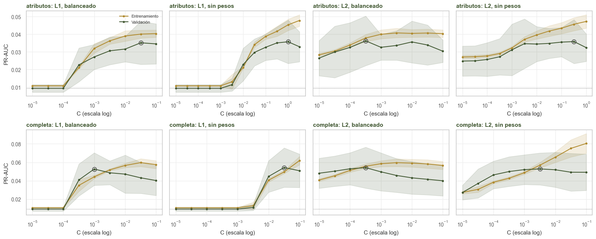
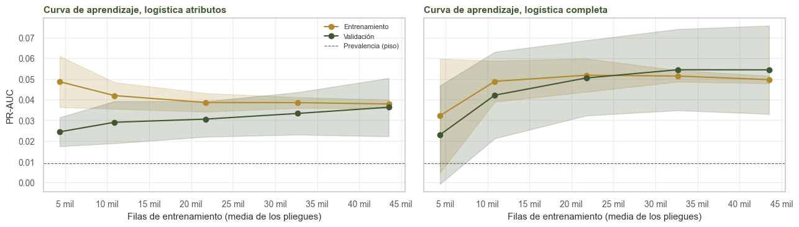
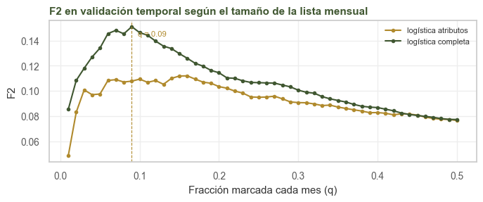
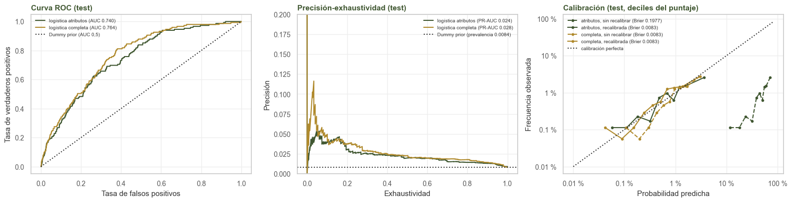
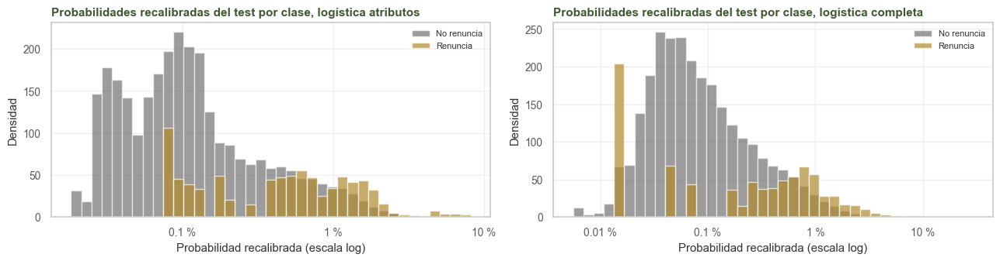
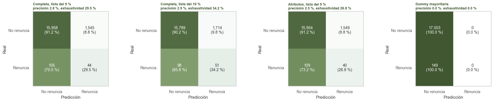
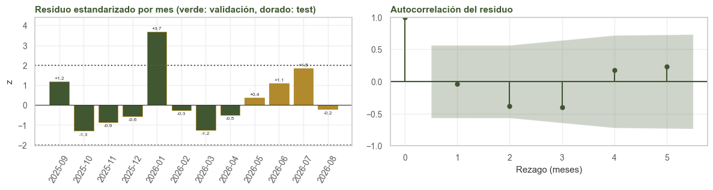
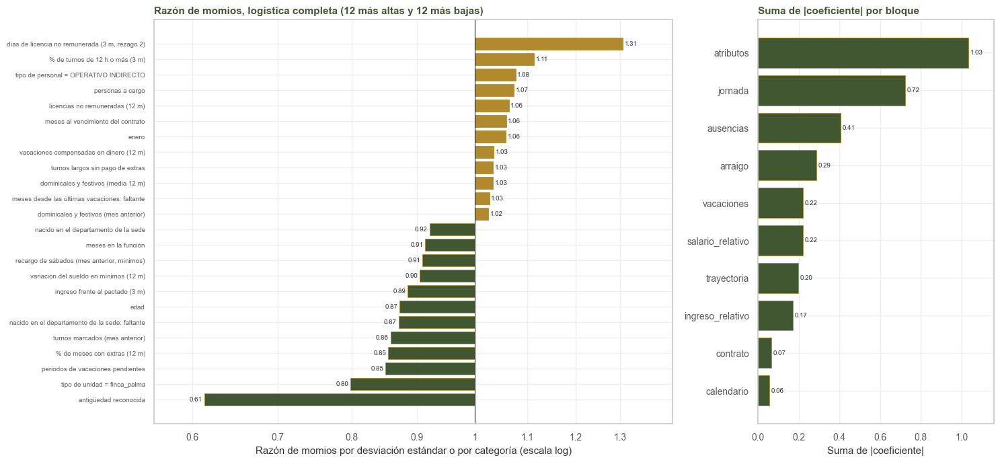
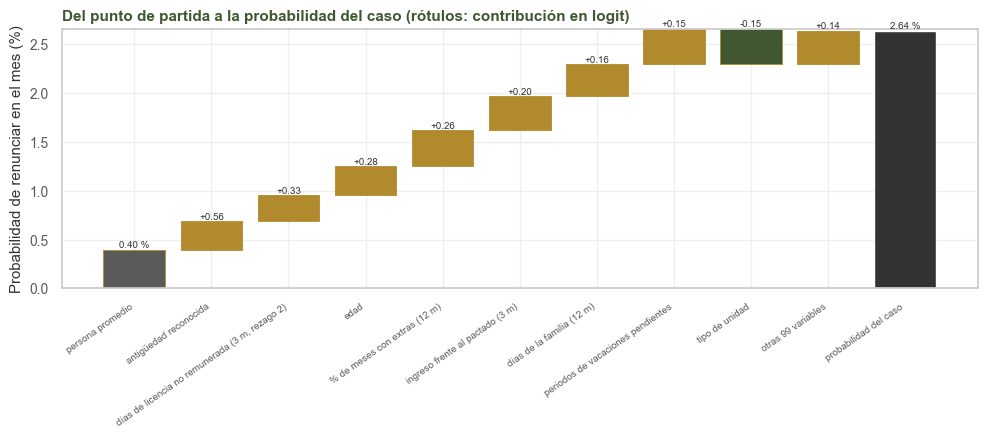

7. Modelo base#
Alcance
Todas las decisiones (variables, preprocesamiento, penalización, pesos, tamaño de la lista y
recalibración) se toman con el entrenamiento (enero de 2025 a abril de 2026), hasta la sección de
recalibración incluida. El test (mayo a agosto de 2026) se evalúa una sola vez, con todo ya elegido, y
sus puntajes se usan en tres lugares: la evaluación en el test, los residuos de sus cuatro meses y el
caso real de agosto de 2026. Ninguno de los tres cambia una decisión. Semilla 2026; los intervalos del test son por bootstrap de personas
(2.000 réplicas). Solo se usan DummyClassifier y regresión logística.
7.1. Definición del objetivo#
Cada fila es una persona activa en el mes t. El objetivo y_renuncia vale 1 si la persona
renuncia voluntariamente en ese mes y 0 si sigue activa o sale por otra vía (despido, fin de
contrato, no renovación ya decidida). Las predictoras se conocen el día 1 del mes t: los atributos
son los del inicio del mes, y lo que sale de la nómina, las marcaciones y las novedades (incluidas las
ausencias) llega hasta el mes t − 1; las variables con sufijo _r2, hasta t − 2 (capítulo 6).
En el primer mes de cada episodio esas variables de historia están vacías, y el indicador de
faltante lo recoge. El modelo responde a una pregunta operativa: a quién mirar
primero este mes. Por eso la salida se usa como un orden de riesgo dentro del mes, y el
resultado principal es cuántas renuncias quedan dentro de una lista mensual de tamaño fijo.
7.2. Modelos comparados y métricas#
modelo |
para qué |
|---|---|
|
predice siempre «no renuncia»: muestra lo que vale la exactitud con 1 % de positivos |
|
puntúa a todos con la prevalencia: el piso de cualquier métrica de ordenamiento |
|
predice al azar con la proporción de clases: el piso de la matriz de confusión |
|
predice 0 o 1 con probabilidad 1/2: el piso de la exhaustividad a cambio de marcar a la mitad |
logística de atributos |
las 18 variables de atributos del trabajador y del puesto (sin la historia laboral) |
logística completa |
las 105 predictoras: los atributos más los 8 bloques de historia laboral |
Las dos logísticas llevan además la indicadora de enero y la antigüedad por tramos (sección 7.3) y el mismo preprocesamiento, de modo que su diferencia mide solo lo que aporta la historia laboral. La penalización (L1 o L2), su fuerza C y los pesos de clase se eligen por validación temporal, por separado para cada conjunto.
La métrica principal es la PR-AUC (precisión promedio). Como métrica operativa se reporta la captura en el 10 % de mayor riesgo de cada mes. En las métricas con umbral (exactitud, exactitud balanceada, precisión, exhaustividad, F1 y F2) el umbral es el tamaño de la lista mensual: se marca la fracción q de mayor puntaje de cada mes. El F2 pesa la exhaustividad cuatro veces más que la precisión, lo que refleja el costo relativo del problema: es preferible conversar con alguien que no iba a renunciar que dejar de ver a quien sí.
Con VP, FP, FN y VN las cuatro celdas de la matriz de confusión (verdaderos y falsos positivos, falsos y verdaderos negativos),
con \(\beta = 1\) para el F1 y \(\beta = 2\) para el F2. La PR-AUC se calcula como precisión promedio, \(AP = \sum_k (R_k - R_{k-1}) P_k\), donde \(P_k\) y \(R_k\) son la precisión y la exhaustividad al marcar los k puntajes más altos. El puntaje de Brier, \(\frac{1}{n} \sum_i (\hat p_i - y_i)^2\), mide la calidad de las probabilidades y no solo del orden. En la versión balanceada cada clase c recibe el peso \(w_c = n / (2 n_c)\), así que cada renuncia pesa unas 97 veces lo que pesa una no renuncia.
Observación
Con 1 % de positivos, el ROC-AUC puede ser alto aunque el modelo sirva poco en la práctica, porque premia ordenar bien la gran masa de negativos. La PR-AUC se concentra en los positivos y su piso es la prevalencia (≈ 0,01), no 0,5.
7.3. Implementación: Pipeline#
Todo el preprocesamiento está dentro de un Pipeline con un ColumnTransformer; en cada pliegue
se ajusta solo con sus filas de entrenamiento (percentiles, asimetría, medianas, medias, desviaciones
y categorías frecuentes). Cada paso responde a un hallazgo del análisis exploratorio:
paso |
hallazgo que lo motiva |
|---|---|
numéricas: recorte en los percentiles 1 y 99 |
más de la mitad de las numéricas no binarias tienen más del 5 % de filas fuera de las vallas de Tukey, por colas reales y no por errores (capítulo 1); la logística es sensible a esos valores |
numéricas: \(\operatorname{sign}(x)\log(1+\lvert x\rvert)\) si \(\lvert g_1\rvert > 2\) tras el recorte, decidido con el entrenamiento de cada pliegue |
horas extra, recargos, dominicales, bonos y días de licencia son conteos con masa en cero y cola larga; con el entrenamiento completo son 39 variables (síntesis del capítulo 3) |
antigüedad reconocida también por tramos (0-11, 12-23, 24-35, 36-59 y 60 o más meses) |
el riesgo tiene una meseta el primer año y luego cae, algo que un solo coeficiente lineal no sigue (capítulo 3) |
numéricas: imputación por la mediana con indicador de faltante ( |
los nulos son estructurales (el hecho no ocurrió, la persona no marca en biométrico, no hay nómina del mes) y el faltante es en sí información; 63 variables tienen nulos (capítulos 1 y 3) |
numéricas: estandarización |
la penalización L1 o L2 necesita escalas comparables; con ellas el coeficiente es por desviación estándar |
binarias sin recorte ni logaritmo |
recortar una binaria rara en su percentil 99 la dejaría constante |
categóricas: el nulo como categoría propia ( |
en familia de cargo y oficio el nulo corresponde al primer mes, de más riesgo (capítulo 1) |
categóricas: una columna por categoría; las de menos de 300 filas y las nuevas del test se agrupan en «infrecuentes» |
muchas ubicaciones y oficios tienen menos de 5 renuncias (capítulo 3); 300 filas es la regla del libro para leer una tasa |
|
es un código guardado como número (capítulo 1); |
indicadora de enero |
es el único efecto de calendario que mejora a la tasa constante fuera de muestra (capítulo 5) |
interacciones contrato por línea y contrato por tramo de antigüedad |
candidatas del capítulo 3; entran solo si mejoran la validación (sección 7.6) |
La correlación alta entre bloques (salario, jornada e ingreso; capítulo 4) y las redundancias entre atributos (sociedad y línea, familia y oficio) no se resuelven quitando variables antes de la partición, sino con la penalización: L2 reparte el peso entre variables correlacionadas y L1 se queda con una de ellas.
7.4. Validación#
Se usa la validación temporal del capítulo 2: ventana creciente, un mes de separación y ocho
pliegues que validan cada mes de septiembre de 2025 a abril de 2026. No se usa
TimeSeriesSplit(gap=...) porque en un panel el gap cuenta filas, no meses; pliegues_temporales
separa por mes calendario.
import sys
import time
import warnings
import numpy as np
import pandas as pd
import matplotlib.pyplot as plt
from matplotlib.ticker import FuncFormatter, NullFormatter
from joblib import Parallel, delayed
from scipy import stats
from sklearn.base import BaseEstimator, TransformerMixin
from sklearn.compose import ColumnTransformer
from sklearn.pipeline import Pipeline, make_pipeline
from sklearn.impute import SimpleImputer
from sklearn.preprocessing import StandardScaler, OneHotEncoder
from sklearn.linear_model import LogisticRegression
from sklearn.dummy import DummyClassifier
from sklearn.model_selection import GroupShuffleSplit
from sklearn.metrics import (average_precision_score, roc_auc_score, brier_score_loss, roc_curve,
precision_recall_curve, confusion_matrix, classification_report)
from sklearn.calibration import calibration_curve
from statsmodels.stats.diagnostic import acorr_ljungbox
from statsmodels.graphics.tsaplots import plot_acf
sys.path.insert(0, '.')
warnings.filterwarnings('ignore')
from comun import (cargar, particion, estilo, etiquetar, pliegues_temporales, marcar_top,
metricas_umbral, OBJETIVO, NUM, BIN, CAT, BASE, PREDICTORAS, BLOQUE, SEMILLA, CORTE,
NOMBRE, VERDE, ORO, TINTA, GRIS, BORDE, PALETA)
estilo()
N_JOBS = 4
# Datos
p = cargar()
p['enero'] = (p.mes.str[5:] == '01').astype(int)
# antigüedad reconocida por tramos (capítulo 3) y las dos interacciones candidatas, como categóricas
p['antig_tramo'] = pd.cut(p.antig_meses, [-np.inf, 11, 23, 35, 59, np.inf],
labels=['0-11', '12-23', '24-35', '36-59', '60+']).astype(str)
p['contrato_x_linea'] = p.contrato.astype(str) + ' | ' + p.linea.astype(str)
p['contrato_x_antig'] = p.contrato.astype(str) + ' | ' + p.antig_tramo
tr, te = particion(p)
tr = tr.reset_index(drop=True)
te = te.reset_index(drop=True)
INTER = ['contrato_x_linea', 'contrato_x_antig']
CAT_M = CAT + ['antig_tramo'] + INTER
CONJUNTOS = {'atributos': BASE + ['antig_tramo', 'enero'], 'completa': PREDICTORAS + ['antig_tramo', 'enero']}
def bloque_de(v):
if v in INTER:
return 'interacciones'
if v == 'antig_tramo':
return 'atributos'
return BLOQUE.get(v, 'calendario')
LOGISTICAS = ['atributos', 'completa']
ytr, mtr, gtr = tr[OBJETIVO].to_numpy(), tr.mes.to_numpy(), tr.persona_id.to_numpy()
yte, mte, gte = te[OBJETIVO].to_numpy(), te.mes.to_numpy(), te.persona_id.to_numpy()
class Recorte(BaseEstimator, TransformerMixin):
"""Recorta cada numérica en sus percentiles 1 y 99 y aplica log con signo a las de cola larga
(|asimetría| > 2 después del recorte). Todo se estima con las filas de ajuste. No toca las
binarias ni las columnas con p1 = p99, que el recorte dejaría constantes."""
def fit(self, X, y=None):
X = np.asarray(X, float)
self.lo_, self.hi_ = np.nanpercentile(X, 1, 0), np.nanpercentile(X, 99, 0)
distintos = np.array([len(np.unique(c[~np.isnan(c)])) for c in X.T])
self.recorta_ = (distintos > 2) & (self.hi_ > self.lo_)
Xc = self._recortar(X)
m, s = np.nanmean(Xc, 0), np.nanstd(Xc, 0)
self.asimetria_ = np.nanmean(((Xc - m) / np.where(s > 0, s, 1)) ** 3, 0)
self.log_ = (np.abs(self.asimetria_) > 2) & (distintos > 2)
return self
def _recortar(self, X):
X = X.copy()
r = self.recorta_
X[:, r] = np.clip(X[:, r], self.lo_[r], self.hi_[r])
return X
def transform(self, X):
X = self._recortar(np.asarray(X, float))
X[:, self.log_] = np.sign(X[:, self.log_]) * np.log1p(np.abs(X[:, self.log_]))
return X
def get_feature_names_out(self, input_features=None):
return np.asarray(input_features, object)
def columnas(conj):
cols = CONJUNTOS[conj]
return [c for c in cols if c not in CAT_M], [c for c in cols if c in CAT_M]
def preprocesador(conj):
num, cat = columnas(conj)
return ColumnTransformer([
('num', make_pipeline(Recorte(), SimpleImputer(strategy='median', add_indicator=True),
StandardScaler()), num),
('cat', make_pipeline(SimpleImputer(strategy='constant', fill_value='(nulo)'),
OneHotEncoder(handle_unknown='infrequent_if_exist', min_frequency=300)), cat),
])
def modelo(conj, C=1.0, pen='l2', pesos='sin pesos'):
clf = LogisticRegression(C=C, penalty=pen, class_weight='balanced' if pesos == 'balanceado' else None,
max_iter=5000, solver='liblinear' if pen == 'l1' else 'lbfgs',
# liblinear penaliza también el intercepto; una escala grande lo deja casi libre
intercept_scaling=100 if pen == 'l1' else 1, random_state=SEMILLA)
return Pipeline([('prep', preprocesador(conj)), ('clf', clf)])
PT = pliegues_temporales(mtr)
print('pliegues temporales:')
for ent, val in PT:
print(f' valida {mtr[val][0]} ({len(val):,} filas, {int(ytr[val].sum())} renuncias) | '
f'entrena {mtr[ent].min()} a {mtr[ent].max()} ({len(ent):,} filas)')
for conj in LOGISTICAS:
prep = preprocesador(conj).fit(tr[CONJUNTOS[conj]])
rec = prep.named_transformers_['num'][0]
print(f'{conj}: {len(CONJUNTOS[conj])} variables -> {len(prep.get_feature_names_out())} columnas | '
f'numéricas recortadas {int(rec.recorta_.sum())} de {len(rec.recorta_)}, con log {int(rec.log_.sum())}')
pliegues temporales:
valida 2025-09 (4,248 filas, 47 renuncias) | entrena 2025-01 a 2025-07 (28,614 filas)
valida 2025-10 (4,246 filas, 31 renuncias) | entrena 2025-01 a 2025-08 (32,826 filas)
valida 2025-11 (4,288 filas, 37 renuncias) | entrena 2025-01 a 2025-09 (37,074 filas)
valida 2025-12 (4,281 filas, 40 renuncias) | entrena 2025-01 a 2025-10 (41,320 filas)
valida 2026-01 (4,322 filas, 60 renuncias) | entrena 2025-01 a 2025-11 (45,608 filas)
valida 2026-02 (4,368 filas, 39 renuncias) | entrena 2025-01 a 2025-12 (49,889 filas)
valida 2026-03 (4,414 filas, 33 renuncias) | entrena 2025-01 a 2026-01 (54,211 filas)
valida 2026-04 (4,423 filas, 36 renuncias) | entrena 2025-01 a 2026-02 (58,579 filas)
atributos: 20 variables -> 168 columnas | numéricas recortadas 2 de 6, con log 0
completa: 107 variables -> 327 columnas | numéricas recortadas 72 de 89, con log 39
Nótese que la logística completa trabaja con muchas más columnas que variables: cada categoría frecuente es una columna y cada numérica con faltantes suma su indicador. Las cifras de recorte y logaritmo de la salida son las del entrenamiento completo; en cada pliegue se recalculan con sus propias filas.
7.5. Líneas base triviales y la exactitud#
Antes de ajustar nada, las cuatro estrategias de DummyClassifier en los mismos ocho pliegues. Las
métricas con umbral usan la predicción (predict) de cada dummy.
DUMMIES = {'dummy_mayoritaria': DummyClassifier(strategy='most_frequent'),
'dummy_prior': DummyClassifier(strategy='prior'),
'dummy_estratificado': DummyClassifier(strategy='stratified', random_state=SEMILLA),
'dummy_uniforme': DummyClassifier(strategy='uniform', random_state=SEMILLA)}
def metricas_con_balance(y, marca):
m = metricas_umbral(y, marca)
m['exactitud balanceada'] = (m['exhaustividad'] + m['especificidad']) / 2
return m
filas, PF_DUMMY = [], {}
X_nada = np.zeros((len(ytr), 1))
for nombre, d in DUMMIES.items():
por = []
for k, (ent, val) in enumerate(PT):
d.fit(X_nada[ent], ytr[ent])
s = d.predict_proba(X_nada[val])[:, 1]
m = metricas_con_balance(ytr[val], d.predict(X_nada[val]))
por.append({'PR val': average_precision_score(ytr[val], s), 'ROC val': roc_auc_score(ytr[val], s), **m})
por = pd.DataFrame(por)
PF_DUMMY[nombre] = por
filas.append(por.mean().rename(nombre))
base_dummy = pd.DataFrame(filas)[['exactitud', 'exactitud balanceada', 'precisión', 'exhaustividad',
'especificidad', 'F1', 'PR val', 'ROC val']]
print(f'prevalencia media de los meses validados: {np.mean([ytr[v].mean() for _, v in PT]):.4f}')
base_dummy.round(4)
prevalencia media de los meses validados: 0.0093
| exactitud | exactitud balanceada | precisión | exhaustividad | especificidad | F1 | PR val | ROC val | |
|---|---|---|---|---|---|---|---|---|
| dummy_mayoritaria | 0.9907 | 0.5000 | 0.0000 | 0.0000 | 1.0000 | 0.0000 | 0.0093 | 0.5000 |
| dummy_prior | 0.9907 | 0.5000 | 0.0000 | 0.0000 | 1.0000 | 0.0000 | 0.0093 | 0.5000 |
| dummy_estratificado | 0.9799 | 0.5006 | 0.0132 | 0.0123 | 0.9890 | 0.0125 | 0.0097 | 0.5006 |
| dummy_uniforme | 0.4999 | 0.4869 | 0.0088 | 0.4736 | 0.5001 | 0.0173 | 0.0093 | 0.5000 |
Nota crítica: la exactitud alta no es un buen modelo
El dummy que predice siempre «no renuncia» obtiene una exactitud de 0,99 con exhaustividad 0: no encuentra ninguna renuncia. Esa exactitud es exactamente uno menos la prevalencia, no una señal de aprendizaje. No se debe a una fuga de información (el capítulo 6 descartó las variables que se construyen con la salida y verificó la disponibilidad de cada bloque al día 1 del mes) ni a una validación optimista (es temporal: se valida siempre en meses posteriores al entrenamiento). Por eso la exactitud no se usa para elegir modelos, y en su lugar se reportan la PR-AUC, la exactitud balanceada (que vale cerca de 0,5 para los cuatro dummies), la exhaustividad y el F2.
La tabla muestra las otras caras del mismo problema: el dummy estratificado tiene exactitud de 0,98 y encuentra el 1 % de las renuncias, y el uniforme encuentra casi la mitad (0,47) a cambio de marcar a la mitad de las personas, con exactitud de 0,50. Ninguno ordena: su PR-AUC es la prevalencia media de los meses validados (0,0093) y su ROC-AUC, 0,5.
7.6. Regularización: búsqueda de hiperparámetros#
Para cada conjunto se buscan la penalización (L1 con liblinear, L2 con lbfgs), la fuerza C y
los pesos de clase (balanceados o sin pesos), con la PR-AUC media de los ocho pliegues temporales como
criterio. La rejilla de C va de \(10^{-5}\) a \(10^{-1}\) en medios decenios; si el mejor C de una
combinación queda en un borde, la rejilla se amplía medio decenio hacia ese lado hasta que el óptimo
quede en el interior. Es lo mismo que GridSearchCV(Pipeline, cv=pliegues, scoring='average_precision', return_train_score=True), escrito como un bucle para poder ampliar la rejilla y guardar las
predicciones fuera de pliegue; el Pipeline completo se reajusta en cada pliegue.
def ajuste_pliegue(conj, pen, pesos, C, k):
ent, val = PT[k]
X = tr[CONJUNTOS[conj]]
m = modelo(conj, C, pen, pesos).fit(X.iloc[ent], ytr[ent])
s_ent = m.predict_proba(X.iloc[ent])[:, 1]
s_val = m.predict_proba(X.iloc[val])[:, 1]
return {'conjunto': conj, 'pen': pen, 'pesos': pesos, 'C': C, 'pliegue': k + 1, 'mes_val': mtr[val][0],
'PR ent': average_precision_score(ytr[ent], s_ent), 'PR val': average_precision_score(ytr[val], s_val),
'ROC ent': roc_auc_score(ytr[ent], s_ent), 'ROC val': roc_auc_score(ytr[val], s_val),
'prev ent': ytr[ent].mean(), 'prev val': ytr[val].mean(),
'no nulos': int((m[-1].coef_ != 0).sum()), 's_val': s_val,
'coef': pd.Series(m[-1].coef_[0], index=m[:-1].get_feature_names_out())}
REJILLA = [float(f'{c:.1e}') for c in 10 ** np.arange(-5, -0.9, 0.5)]
def buscar(conj, combos):
"""Rejilla por combinación (penalización, pesos); se amplía si el óptimo cae en un borde."""
hechos = {}
pendientes = [(pen, pesos, C) for pen, pesos in combos for C in REJILLA]
while pendientes:
res = Parallel(n_jobs=N_JOBS)(delayed(ajuste_pliegue)(conj, pen, pesos, C, k)
for pen, pesos, C in pendientes for k in range(len(PT)))
for r in res:
hechos.setdefault((r['pen'], r['pesos'], r['C']), []).append(r)
pendientes = []
for pen, pesos in combos:
cs = sorted(C for (a, b, C) in hechos if (a, b) == (pen, pesos))
media = {C: np.mean([r['PR val'] for r in hechos[(pen, pesos, C)]]) for C in cs}
mejor = max(media, key=media.get)
if mejor == cs[-1] and mejor < 10:
pendientes.append((pen, pesos, float(f'{mejor * 10 ** 0.5:.1e}')))
elif mejor == cs[0] and mejor > 1e-7:
pendientes.append((pen, pesos, float(f'{mejor / 10 ** 0.5:.1e}')))
return pd.DataFrame([r for v in hechos.values() for r in v])
COMBOS_L1 = [('l1', 'balanceado'), ('l1', 'sin pesos')]
COMBOS_L2 = [('l2', 'balanceado'), ('l2', 'sin pesos')]
t0 = time.time()
GRID = [buscar('atributos', COMBOS_L1 + COMBOS_L2)]
print(f'atributos: {GRID[0].shape[0]} ajustes en {time.time() - t0:.0f} s')
atributos: 328 ajustes en 247 s
t0 = time.time()
GRID.append(buscar('completa', COMBOS_L2))
print(f'completa, L2: {GRID[-1].shape[0]} ajustes en {time.time() - t0:.0f} s')
completa, L2: 144 ajustes en 238 s
t0 = time.time()
GRID.append(buscar('completa', COMBOS_L1))
print(f'completa, L1: {GRID[-1].shape[0]} ajustes en {time.time() - t0:.0f} s')
GRID = pd.concat(GRID, ignore_index=True)
resumen = (GRID.groupby(['conjunto', 'pen', 'pesos', 'C'])
.agg(**{'PR val': ('PR val', 'mean'), 'PR val de': ('PR val', 'std'), 'PR ent': ('PR ent', 'mean'),
'ROC val': ('ROC val', 'mean'), 'ROC ent': ('ROC ent', 'mean'),
'columnas no nulas': ('no nulos', 'mean')}))
mejores = resumen.loc[resumen.groupby(['conjunto', 'pen', 'pesos'])['PR val'].idxmax()]
bordes = []
for (conj, pen, pesos, C) in mejores.index:
cs = sorted(resumen.loc[(conj, pen, pesos)].index)
bordes.append('borde' if C in (cs[0], cs[-1]) else 'interior')
mejores = mejores.assign(**{'rejilla de C': [f'{min(resumen.loc[i[:3]].index):g} a {max(resumen.loc[i[:3]].index):g}'
for i in mejores.index], 'posición': bordes})
ELEGIDO = {conj: mejores.loc[conj]['PR val'].idxmax() for conj in LOGISTICAS}
for conj, (pen, pesos, C) in ELEGIDO.items():
print(f'{conj}: elegido {pen}, {pesos}, C = {C:g}')
mejores.round(4)
completa, L1: 144 ajustes en 1069 s
atributos: elegido l2, balanceado, C = 0.00032
completa: elegido l1, sin pesos, C = 0.032
| conjunto / pen / pesos / C | PR val | PR val de | PR ent | ROC val | ROC ent | columnas no nulas | rejilla de C | posición | |||
|---|---|---|---|---|---|---|---|---|---|---|---|
| atributos | l1 | balanceado | 0.03200 | 0.0352 | 0.0122 | 0.0401 | 0.7536 | 0.7905 | 70.875 | 1e-05 a 0.1 | interior |
| sin pesos | 1.00000 | 0.0358 | 0.0123 | 0.0454 | 0.7517 | 0.7928 | 84.500 | 1e-05 a 3.2 | interior | ||
| l2 | balanceado | 0.00032 | 0.0363 | 0.0141 | 0.0379 | 0.7609 | 0.7621 | 152.125 | 1e-05 a 0.1 | interior | |
| sin pesos | 0.32000 | 0.0359 | 0.0124 | 0.0457 | 0.7535 | 0.7921 | 152.125 | 1e-05 a 1 | interior | ||
| completa | l1 | balanceado | 0.00100 | 0.0527 | 0.0176 | 0.0443 | 0.7829 | 0.7788 | 25.500 | 1e-05 a 0.1 | interior |
| sin pesos | 0.03200 | 0.0544 | 0.0213 | 0.0496 | 0.7899 | 0.7901 | 38.625 | 1e-05 a 0.1 | interior | ||
| l2 | balanceado | 0.00032 | 0.0542 | 0.0222 | 0.0558 | 0.7859 | 0.8174 | 311.125 | 1e-05 a 0.1 | interior | |
| sin pesos | 0.00320 | 0.0529 | 0.0173 | 0.0569 | 0.7905 | 0.8073 | 311.125 | 1e-05 a 0.1 | interior |
Nótese que ningún óptimo queda en el borde: en las dos combinaciones de atributos sin pesos la rejilla se amplió hacia arriba (hasta \(C = 1\) y \(C = 3{,}2\)), y el borde inferior nunca es el óptimo porque con L1 y \(C \le 10^{-4}\) todos los coeficientes valen cero y la PR-AUC cae a la prevalencia. Se eligen la logística de atributos con L2, pesos balanceados y \(C = 3{,}2 \cdot 10^{-4}\) (PR-AUC media 0,036), y la completa con L1, sin pesos y \(C = 0{,}032\) (0,054), que deja en promedio unas 39 de sus 327 columnas con coeficiente distinto de cero en cada pliegue (50 en el modelo final). Dentro de cada conjunto, las cuatro combinaciones quedan casi empatadas (0,053 a 0,054 en la completa y 0,035 a 0,036 en atributos), con diferencias mucho menores que la desviación entre pliegues (0,012 a 0,022): la elección entre L1 y L2 o entre pesos y sin pesos casi no cambia el orden de riesgo, y se toma la de mayor media, que es la regla fijada de antemano. La diferencia grande está entre conjuntos: la historia laboral sube la PR-AUC media de 0,036 a 0,054.
7.6.1. Curva de validación#
Siguiendo la convención del curso, la PR-AUC media en las filas de entrenamiento de cada pliegue y en su mes de validación, según C, con una banda de ±1 desviación estándar entre pliegues. El punto marca el C elegido de cada combinación.
fig, axes = plt.subplots(2, 4, figsize=(16, 6.5), sharey='row')
for fila, conj in zip(axes, LOGISTICAS):
for a, (pen, pesos) in zip(fila, COMBOS_L1 + COMBOS_L2):
g = GRID[(GRID.conjunto == conj) & (GRID.pen == pen) & (GRID.pesos == pesos)]
est = g.groupby('C')[['PR ent', 'PR val']].agg(['mean', 'std'])
for col, color, etiqueta in [('PR ent', ORO, 'Entrenamiento'), ('PR val', VERDE, 'Validación')]:
a.plot(est.index, est[(col, 'mean')], marker='o', ms=3, color=color, label=etiqueta)
a.fill_between(est.index, est[(col, 'mean')] - est[(col, 'std')],
est[(col, 'mean')] + est[(col, 'std')], color=color, alpha=0.15)
c_mejor = est[('PR val', 'mean')].idxmax()
a.plot([c_mejor], [est.loc[c_mejor, ('PR val', 'mean')]], 'o', ms=8, mfc='none', mec=TINTA)
a.set(xscale='log', title=f'{conj}: {pen.upper()}, {pesos}', xlabel='C (escala log)')
a.axhline(np.mean([ytr[v].mean() for _, v in PT]), c=GRIS, ls=':', lw=0.8)
fila[0].set_ylabel('PR-AUC')
axes[0, 0].legend(fontsize=8)
plt.tight_layout()
plt.show()

Las curvas se leen como en el curso. A la izquierda (penalización muy fuerte) las dos curvas están juntas y bajas: es subajuste, y con L1 llega al extremo de un modelo sin variables, pegado a la prevalencia. Al relajar la penalización suben juntas hasta el C elegido. A la derecha del óptimo la curva de entrenamiento sigue subiendo y la de validación baja: es el sobreajuste, y se ve con claridad en la completa con L2 sin pesos, donde con \(C = 0{,}1\) el entrenamiento llega a 0,08 y la validación cae a 0,049. En el C elegido de cada combinación las dos curvas están cerca. Las bandas de validación son anchas (unos ±0,02): de un mes a otro la PR-AUC varía más que entre valores vecinos de C.
7.6.2. Interacciones explícitas#
El capítulo 3 dejó dos interacciones candidatas: contrato por línea (la razón de tasas entre término fijo e indefinido cambia mucho entre líneas) y contrato por tramo de antigüedad (el orden de los contratos se invierte entre uno y tres años). Una logística solo las ve si se le dan como términos. Se agregan como dos categóricas cruzadas (una columna por combinación frecuente) a la logística completa, con su penalización y sus pesos elegidos y el C elegido y sus dos vecinos de la rejilla. Entran solo si mejoran la PR-AUC media de los pliegues; una mejora menor que una milésima se trata como empate y, por parsimonia, se queda el modelo sin interacciones.
CONJUNTOS['completa_int'] = CONJUNTOS['completa'] + INTER
pen_c, pesos_c, C_c = ELEGIDO['completa']
cs = sorted(resumen.loc[('completa', pen_c, pesos_c)].index)
vecinos = cs[max(cs.index(C_c) - 1, 0): cs.index(C_c) + 2]
GRID_INT = pd.DataFrame(Parallel(n_jobs=N_JOBS)(delayed(ajuste_pliegue)('completa_int', pen_c, pesos_c, c, k)
for c in vecinos for k in range(len(PT))))
media_int = GRID_INT.groupby('C')['PR val'].mean()
C_int = float(media_int.idxmax())
sin_int = (GRID[(GRID.conjunto == 'completa') & (GRID.pen == pen_c) & (GRID.pesos == pesos_c) & (GRID.C == C_c)]
.sort_values('pliegue')['PR val'].to_numpy())
con_int = GRID_INT[GRID_INT.C == C_int].sort_values('pliegue')['PR val'].to_numpy()
d_int = con_int - sin_int
MEJORA_MINIMA = 0.001 # por debajo de una milésima de PR-AUC es un empate: gana el modelo más simple
USA_INT = bool(d_int.mean() >= MEJORA_MINIMA)
print(pd.DataFrame({'PR-AUC media con interacciones': media_int,
'PR-AUC media sin ellas (mismo C)': [resumen.loc[('completa', pen_c, pesos_c, c), 'PR val']
for c in media_int.index]}).round(4).to_string())
print(f'\nmejor con interacciones (C = {C_int:g}) frente a la completa elegida (C = {C_c:g}): '
f'{d_int.mean():+.4f} de PR-AUC media | gana en {int((d_int > 0).sum())} de {len(d_int)} pliegues | '
f't pareada p = {stats.ttest_rel(con_int, sin_int).pvalue:.3f} | Wilcoxon p = {stats.wilcoxon(d_int).pvalue:.3f}')
print('las interacciones', 'ENTRAN' if USA_INT else 'NO entran', 'en la logística completa')
if USA_INT:
CONJUNTOS['completa'] = CONJUNTOS['completa_int']
ELEGIDO['completa'] = (pen_c, pesos_c, C_int)
PR-AUC media con interacciones PR-AUC media sin ellas (mismo C)
C
0.010 0.0447 0.0447
0.032 0.0544 0.0544
0.100 0.0509 0.0509
mejor con interacciones (C = 0.032) frente a la completa elegida (C = 0.032): +0.0000 de PR-AUC media | gana en 3 de 8 pliegues | t pareada p = 0.982 | Wilcoxon p = 0.945
las interacciones NO entran en la logística completa
Con las interacciones la PR-AUC media no cambia (0,0544 con y sin ellas en el C elegido; ganan en 3 de 8 pliegues, Wilcoxon p = 0,95), así que no entran. Lo que el capítulo 3 veía en las tasas crudas (el efecto del contrato cambia según la línea y la antigüedad) lo explican, dentro del modelo, la antigüedad reconocida y la historia laboral, que el análisis bivariado no ajustaba.
7.7. Comparación de modelos en validación#
Todos los modelos se evalúan en los mismos pliegues, de modo que las diferencias se prueban pareadas por pliegue: prueba t pareada y, como con ocho pliegues no se puede verificar la normalidad, también Wilcoxon de rangos con signo.
def del_elegido(conj):
pen, pesos, C = ELEGIDO[conj]
g = GRID_INT if (conj == 'completa' and USA_INT) else GRID[GRID.conjunto == conj]
return (g[(g.pen == pen) & (g.pesos == pesos) & (g.C == C)].sort_values('pliegue').reset_index(drop=True))
PF = {conj: del_elegido(conj) for conj in LOGISTICAS}
PF['dummy_prior'] = PF_DUMMY['dummy_prior']
def oof(tabla):
s = np.full(len(ytr), np.nan)
for k, (_, val) in enumerate(PT):
s[val] = tabla.loc[k, 's_val']
return s
OOF = {conj: oof(PF[conj]) for conj in LOGISTICAS}
print(pd.DataFrame({n: {'PR-AUC media': PF[n]['PR val'].mean(), 'PR-AUC de': PF[n]['PR val'].std(),
'ROC-AUC media': PF[n]['ROC val'].mean()} for n in PF}).T.round(4).to_string())
def pareada(a, b, metrica='PR val'):
x, z = PF[a][metrica].to_numpy(), PF[b][metrica].to_numpy()
d = x - z
ic = stats.t.interval(0.95, len(d) - 1, d.mean(), stats.sem(d))
return {'comparación': f'{a} - {b}', 'métrica': metrica.split()[0] + '-AUC', 'diferencia media': d.mean(),
'IC 95 % bajo': ic[0], 'IC 95 % alto': ic[1], 't pareada p': stats.ttest_rel(x, z).pvalue,
'Wilcoxon p': stats.wilcoxon(d).pvalue, 'gana en': f'{int((d > 0).sum())} de {len(d)}'}
print()
pruebas = pd.DataFrame([pareada(a, b, m) for a, b in [('completa', 'atributos'), ('completa', 'dummy_prior'),
('atributos', 'dummy_prior')]
for m in ['PR val', 'ROC val']])
pruebas.round(4)
PR-AUC media PR-AUC de ROC-AUC media
atributos 0.0363 0.0141 0.7609
completa 0.0544 0.0213 0.7899
dummy_prior 0.0093 0.0022 0.5000
| comparación | métrica | diferencia media | IC 95 % bajo | IC 95 % alto | t pareada p | Wilcoxon p | gana en | |
|---|---|---|---|---|---|---|---|---|
| 0 | completa - atributos | PR-AUC | 0.0181 | -0.0004 | 0.0365 | 0.0541 | 0.0078 | 8 de 8 |
| 1 | completa - atributos | ROC-AUC | 0.0291 | 0.0038 | 0.0543 | 0.0296 | 0.0391 | 7 de 8 |
| 2 | completa - dummy_prior | PR-AUC | 0.0450 | 0.0267 | 0.0633 | 0.0006 | 0.0078 | 8 de 8 |
| 3 | completa - dummy_prior | ROC-AUC | 0.2899 | 0.2702 | 0.3096 | 0.0000 | 0.0078 | 8 de 8 |
| 4 | atributos - dummy_prior | PR-AUC | 0.0270 | 0.0154 | 0.0385 | 0.0009 | 0.0078 | 8 de 8 |
| 5 | atributos - dummy_prior | ROC-AUC | 0.2609 | 0.2393 | 0.2824 | 0.0000 | 0.0078 | 8 de 8 |
La completa supera a la de atributos en PR-AUC en los ocho pliegues (+0,018 de media, IC 95 % de −0,0004 a +0,037; t pareada p = 0,054, Wilcoxon p = 0,008) y en ROC-AUC en siete (+0,029; p = 0,03 y 0,04). Las dos pruebas no dicen lo mismo en PR-AUC por una razón: la ventaja de la completa es siempre positiva, pero su tamaño cambia mucho de un mes a otro, lo que infla la varianza que usa la t; Wilcoxon solo mira los signos y los rangos, y con 8 de 8 pliegues a favor llega a su mínimo posible con ocho pares, \(2/2^8 = 0{,}0078\). Las dos logísticas superan al dummy en todos los pliegues (p = 0,008), por 0,027 (atributos) y 0,045 (completa) de PR-AUC.
7.8. Diagnóstico de sobreajuste#
Comparamos el desempeño en las filas de entrenamiento de cada pliegue con el de su mes de validación. Se prueba si la brecha media es cero (t de una muestra y Wilcoxon) y se lee su tamaño relativo, \((\text{ent} - \text{val}) / \text{ent}\), con los umbrales del curso: hasta 5 a 10 % es aceptable y más de 15 a 20 % indica sobreajuste.
filas_brecha = []
for conj in LOGISTICAS:
f = PF[conj]
for m in ['PR', 'ROC']:
d = (f[f'{m} ent'] - f[f'{m} val']).to_numpy()
ic = stats.t.interval(0.95, len(d) - 1, d.mean(), stats.sem(d))
filas_brecha.append({'modelo': conj, 'métrica': f'{m}-AUC', 'entrenamiento': f[f'{m} ent'].mean(),
'validación': f[f'{m} val'].mean(), 'brecha media': d.mean(),
'IC 95 %': f'{ic[0]:+.4f} a {ic[1]:+.4f}',
'brecha relativa %': 100 * d.mean() / f[f'{m} ent'].mean(),
't p': stats.ttest_1samp(d, 0).pvalue, 'Wilcoxon p': stats.wilcoxon(d).pvalue})
brechas = pd.DataFrame(filas_brecha).set_index(['modelo', 'métrica'])
print(PF['completa'][['mes_val', 'prev ent', 'prev val', 'PR ent', 'PR val', 'ROC ent', 'ROC val']]
.round(4).to_string(index=False))
brechas.round(4)
mes_val prev ent prev val PR ent PR val ROC ent ROC val
2025-09 0.0113 0.0111 0.0480 0.0375 0.7839 0.7648
2025-10 0.0111 0.0073 0.0514 0.0936 0.7883 0.7865
2025-11 0.0111 0.0086 0.0518 0.0265 0.7903 0.7695
2025-12 0.0107 0.0093 0.0518 0.0732 0.7928 0.7837
2026-01 0.0105 0.0139 0.0473 0.0550 0.7918 0.7799
2026-02 0.0104 0.0089 0.0486 0.0586 0.7907 0.8062
2026-03 0.0107 0.0075 0.0489 0.0501 0.7900 0.8392
2026-04 0.0106 0.0081 0.0493 0.0404 0.7927 0.7897
| modelo / métrica | entrenamiento | validación | brecha media | IC 95 % | brecha relativa % | t p | Wilcoxon p | |
|---|---|---|---|---|---|---|---|---|
| atributos | PR-AUC | 0.0379 | 0.0363 | 0.0016 | -0.0110 a +0.0141 | 4.2029 | 0.7729 | 0.6406 |
| ROC-AUC | 0.7621 | 0.7609 | 0.0013 | -0.0209 a +0.0234 | 0.1668 | 0.8957 | 0.5469 | |
| completa | PR-AUC | 0.0496 | 0.0544 | -0.0047 | -0.0222 a +0.0127 | -9.5278 | 0.5416 | 0.7422 |
| ROC-AUC | 0.7901 | 0.7899 | 0.0001 | -0.0191 a +0.0193 | 0.0179 | 0.9866 | 0.5469 |
Ninguna brecha es significativa (t p ≥ 0,54; Wilcoxon p ≥ 0,55) y todas están por debajo del 5 % aceptable del curso: en atributos, 4,2 % en PR-AUC y 0,2 % en ROC-AUC; en la completa, 0,02 % en ROC-AUC y −9,5 % en PR-AUC, es decir, la validación supera al entrenamiento. Se leen las dos métricas porque pueden discrepar: el umbral del curso se aplica a cada una. Esta brecha, sin embargo, no basta para concluir que no hay sobreajuste: la brecha negativa de la completa muestra que la comparación mezcla dos cosas: en la tabla por pliegue, octubre de 2025 tiene una PR-AUC de validación de 0,094 frente a 0,051 en su entrenamiento, con una prevalencia más baja (0,73 % frente a 1,11 %). Una brecha así no es sobreajuste negativo; es que el mes validado es distinto. La sección siguiente separa las dos partes.
7.8.1. Sobreajuste o deriva#
En una validación temporal, la brecha entre entrenamiento y validación mezcla dos cosas: el sobreajuste (el modelo aprendió ruido de sus filas) y la deriva (el mes validado es posterior y distinto; por ejemplo, tiene otra prevalencia). Para separarlas, en cada pliegue se reserva el 20 % de las personas de la ventana de entrenamiento, se ajusta el modelo elegido con el 80 % restante y se mide en tres conjuntos: sus propias filas (entrenamiento), las personas reservadas de los mismos meses (validación contemporánea) y el mes de validación (validación temporal). La primera diferencia es sobreajuste puro; la segunda, el efecto de pasar a un mes futuro. Como la PR-AUC depende de la prevalencia, se lee también como lift: PR-AUC dividida por la prevalencia del conjunto donde se mide.
def descomponer(conj, k):
ent, val = PT[k]
pen, pesos, C = ELEGIDO[conj]
X = tr[CONJUNTOS[conj]]
a, b = next(GroupShuffleSplit(1, test_size=0.2, random_state=SEMILLA + k).split(ent, groups=gtr[ent]))
ia, ib = ent[a], ent[b]
m = modelo(conj, C, pen, pesos).fit(X.iloc[ia], ytr[ia])
fila = {'modelo': conj, 'mes_val': mtr[val][0]}
for nombre, ii in [('ent', ia), ('contemporánea', ib), ('temporal', val)]:
s = m.predict_proba(X.iloc[ii])[:, 1]
fila[f'PR {nombre}'] = average_precision_score(ytr[ii], s)
fila[f'lift {nombre}'] = fila[f'PR {nombre}'] / ytr[ii].mean()
fila[f'ROC {nombre}'] = roc_auc_score(ytr[ii], s)
return fila
desc = pd.DataFrame(Parallel(n_jobs=N_JOBS)(delayed(descomponer)(conj, k)
for conj in LOGISTICAS for k in range(len(PT))))
filas = []
for conj, g in desc.groupby('modelo', sort=False):
for m in ['ROC', 'lift', 'PR']:
sobre = (g[f'{m} ent'] - g[f'{m} contemporánea']).to_numpy()
deriva = (g[f'{m} contemporánea'] - g[f'{m} temporal']).to_numpy()
filas.append({'modelo': conj, 'métrica': m, 'entrenamiento': g[f'{m} ent'].mean(),
'contemporánea': g[f'{m} contemporánea'].mean(), 'temporal': g[f'{m} temporal'].mean(),
'sobreajuste (ent - contemp.)': sobre.mean(),
'sobreajuste relativo %': 100 * sobre.mean() / g[f'{m} ent'].mean(),
'p Wilcoxon sobreajuste': stats.wilcoxon(sobre).pvalue,
'deriva (contemp. - temporal)': deriva.mean(),
'p Wilcoxon deriva': stats.wilcoxon(deriva).pvalue})
pd.DataFrame(filas).set_index(['modelo', 'métrica']).round(4)
| modelo / métrica | entrenamiento | contemporánea | temporal | sobreajuste (ent - contemp.) | sobreajuste relativo % | p Wilcoxon sobreajuste | deriva (contemp. - temporal) | p Wilcoxon deriva | |
|---|---|---|---|---|---|---|---|---|---|
| atributos | ROC | 0.7626 | 0.7442 | 0.7585 | 0.0184 | 2.4117 | 0.1953 | -0.0143 | 0.4609 |
| lift | 3.5117 | 3.1257 | 3.5929 | 0.3859 | 10.9899 | 0.1094 | -0.4672 | 1.0000 | |
| PR | 0.0374 | 0.0357 | 0.0331 | 0.0018 | 4.7058 | 0.5469 | 0.0026 | 0.2500 | |
| completa | ROC | 0.7876 | 0.7638 | 0.7895 | 0.0238 | 3.0262 | 0.0547 | -0.0257 | 0.0781 |
| lift | 4.4738 | 4.6235 | 6.2585 | -0.1497 | -3.3455 | 0.4609 | -1.6350 | 0.2500 | |
| PR | 0.0477 | 0.0527 | 0.0550 | -0.0050 | -10.4046 | 0.2500 | -0.0024 | 0.8438 |
El sobreajuste puro (entrenamiento frente a personas nuevas de los mismos meses) es pequeño. En ROC-AUC es de 0,018 en atributos (2,4 %, Wilcoxon p = 0,20) y de 0,024 en la completa (3,0 %, p = 0,055), dentro del 5 % aceptable. En lift la de atributos llega al 11 % (p = 0,11), entre el umbral aceptable y el de sobreajuste, y la completa no tiene brecha (−3 %). Lo que sí aparece es que el paso al mes siguiente no empeora el modelo. La completa ordena mejor en el mes validado que en las personas reservadas de los mismos meses (ROC-AUC 0,790 frente a 0,764; lift 6,3 frente a 4,6), aunque la diferencia no es significativa (p = 0,08 y 0,25). Hay dos razones. La validación temporal evalúa sobre todo a personas que el modelo ya vio en meses anteriores (es un panel), mientras que la contemporánea evalúa a personas que nunca vio. Además, la cobertura de algunos bloques de historia (marcaciones, equipo del jefe) mejora con el tiempo.
Conclusión del diagnóstico: sobreajuste controlado, no ausente. Con penalizaciones más débiles el sobreajuste es claro (curva de validación de la sección 7.6.1), y por eso C se eligió por validación. Con la penalización elegida queda un sobreajuste pequeño: 2 a 3 % en ROC-AUC en los dos modelos (en la completa, al borde de la significación, p = 0,055) y 11 % en el lift de la de atributos, entre el umbral aceptable (5-10 %) y el de sobreajuste (15-20 %) del curso, sin llegar a este. La brecha de la validación temporal lo esconde, porque la deriva entre meses la puede agrandar o, como aquí, darle la vuelta; por eso no sirve sola como medidor. La deriva que importa aparece en el test.
7.8.2. Curva de aprendizaje#
Para saber si el modelo mejoraría con más datos, en cada pliegue se entrena con fracciones crecientes de su ventana (10 %, 25 %, 50 %, 75 % y 100 % de las filas, al azar) y se mide la PR-AUC en su mes de validación. Con el 100 % cada pliegue usa su ventana completa: de 28 mil filas en el primero a 59 mil en el último, que es todo el entrenamiento menos el mes de separación y el mes validado. La banda es ±1 desviación estándar entre pliegues.
FRACCIONES = [0.10, 0.25, 0.50, 0.75, 1.00]
def aprendizaje(conj, k, fr):
ent, val = PT[k]
pen, pesos, C = ELEGIDO[conj]
rng = np.random.default_rng(SEMILLA + k)
ii = np.sort(rng.choice(ent, int(round(fr * len(ent))), replace=False)) if fr < 1 else ent
X = tr[CONJUNTOS[conj]]
m = modelo(conj, C, pen, pesos).fit(X.iloc[ii], ytr[ii])
return {'modelo': conj, 'fracción': fr, 'pliegue': k + 1, 'filas': len(ii),
'PR ent': average_precision_score(ytr[ii], m.predict_proba(X.iloc[ii])[:, 1]),
'PR val': average_precision_score(ytr[val], m.predict_proba(X.iloc[val])[:, 1])}
curva = pd.DataFrame(Parallel(n_jobs=N_JOBS)(delayed(aprendizaje)(conj, k, fr) for conj in LOGISTICAS
for k in range(len(PT)) for fr in FRACCIONES))
est = curva.groupby(['modelo', 'fracción']).agg(filas=('filas', 'mean'), ent=('PR ent', 'mean'),
ent_de=('PR ent', 'std'), val=('PR val', 'mean'),
val_de=('PR val', 'std'))
fig, ax = plt.subplots(1, 2, figsize=(13, 3.8), sharey=True)
for a, conj in zip(ax, LOGISTICAS):
e = est.loc[conj]
for col, color, etiqueta in [('ent', ORO, 'Entrenamiento'), ('val', VERDE, 'Validación')]:
a.plot(e.filas, e[col], marker='o', color=color, label=etiqueta)
a.fill_between(e.filas, e[col] - e[f'{col}_de'], e[col] + e[f'{col}_de'], color=color, alpha=0.2)
a.axhline(np.mean([ytr[v].mean() for _, v in PT]), c=GRIS, ls='--', lw=0.8, label='Prevalencia (piso)')
a.set(title=f'Curva de aprendizaje, logística {conj}', xlabel='Filas de entrenamiento (media de los pliegues)')
a.xaxis.set_major_formatter(FuncFormatter(lambda v, _: f'{v / 1000:.0f} mil'))
ax[0].set_ylabel('PR-AUC')
ax[0].legend(fontsize=8)
plt.tight_layout()
plt.show()
est.round(4)

| modelo / fracción | filas | ent | ent_de | val | val_de | |
|---|---|---|---|---|---|---|
| atributos | 0.10 | 4351.500 | 0.0486 | 0.0123 | 0.0244 | 0.0070 |
| 0.25 | 10878.750 | 0.0419 | 0.0064 | 0.0290 | 0.0101 | |
| 0.50 | 21757.625 | 0.0386 | 0.0045 | 0.0306 | 0.0086 | |
| 0.75 | 32636.375 | 0.0385 | 0.0026 | 0.0333 | 0.0102 | |
| 1.00 | 43515.125 | 0.0379 | 0.0021 | 0.0363 | 0.0141 | |
| completa | 0.10 | 4351.500 | 0.0322 | 0.0275 | 0.0230 | 0.0238 |
| 0.25 | 10878.750 | 0.0488 | 0.0099 | 0.0421 | 0.0209 | |
| 0.50 | 21757.625 | 0.0518 | 0.0081 | 0.0504 | 0.0182 | |
| 0.75 | 32636.375 | 0.0514 | 0.0028 | 0.0544 | 0.0196 | |
| 1.00 | 43515.125 | 0.0496 | 0.0018 | 0.0544 | 0.0213 |
En la de atributos, la PR-AUC de validación sube despacio, de 0,024 con el 10 % de cada ventana (unas 4.400 filas) a 0,036 con la ventana completa (43.500 filas de media, de 28.600 a 58.600 según el pliegue), mientras la de entrenamiento baja de 0,049 a 0,038. Las curvas convergen y casi se tocan: el modelo está limitado por sesgo (tiene pocas variables), y más filas del mismo tipo lo mejorarían poco. En la completa la validación sube rápido hasta la mitad de la ventana (0,050) y luego se aplana (0,054 con el 75 % y con el 100 %). Desde el 50 % las dos curvas están juntas, y la de validación queda algo por encima. Más meses con las mismas variables tampoco moverían mucho la PR-AUC. Lo que la subió fue agregar la historia laboral (de 0,036 a 0,054). Las bandas de ±1 desviación son anchas en las dos, porque cada mes validado tiene entre 31 y 60 renuncias.
7.9. Tamaño de la lista que maximiza el F2#
Con las predicciones fuera de pliegue de la validación temporal de la logística completa se busca la fracción mensual q que maximiza el F2. Se decide con el entrenamiento, y en el test solo se aplica.
ok = ~np.isnan(OOF['completa'])
qs = np.round(np.arange(0.01, 0.51, 0.01), 2)
f2 = pd.DataFrame({conj: {q: metricas_umbral(ytr[ok], marcar_top(OOF[conj][ok], mtr[ok], q))['F2'] for q in qs}
for conj in LOGISTICAS})
Q_F2 = float(f2['completa'].idxmax())
fig, ax = plt.subplots(figsize=(7, 3))
for conj, color in zip(LOGISTICAS, [VERDE, ORO][::-1]):
ax.plot(f2.index, f2[conj], marker='.', color=color, label=f'logística {conj}')
ax.axvline(Q_F2, c=ORO, ls='--', lw=0.8)
ax.annotate(f'q = {Q_F2:.2f}', (Q_F2, f2['completa'].max()), textcoords='offset points', xytext=(6, -10),
fontsize=8, color=ORO)
ax.set(title='F2 en validación temporal según el tamaño de la lista mensual',
xlabel='Fracción marcada cada mes (q)', ylabel='F2')
ax.legend(fontsize=8)
plt.tight_layout()
plt.show()
print(f'q que maximiza el F2 de la completa en validación: {Q_F2:.2f} (F2 = {f2["completa"].max():.3f}); '
f'con q = 0,10 el F2 es {f2.loc[0.10, "completa"]:.3f}')
print('F2 en validación para algunos tamaños:')
print(f2.loc[[0.03, 0.05, 0.08, 0.10, 0.15, 0.20, 0.30]].round(3).T.to_string())

q que maximiza el F2 de la completa en validación: 0.09 (F2 = 0.151); con q = 0,10 el F2 es 0.146
F2 en validación para algunos tamaños:
0.03 0.05 0.08 0.10 0.15 0.20 0.30
atributos 0.101 0.098 0.107 0.109 0.112 0.104 0.091
completa 0.118 0.134 0.145 0.146 0.130 0.114 0.101
El F2 de la completa es máximo con una lista del 9 % de cada mes (0,151) y casi igual con el 8 % y el 10 % (0,145 y 0,146); cae despacio hacia las listas más cortas (0,134 con el 5 %) y más largas (0,130 con el 15 %). La completa supera a la de atributos en todos los tamaños. Se fija \(q = 0{,}09\) para el test y, como el F2 es casi plano entre el 8 % y el 10 %, se reporta también la lista del 10 %, que es la métrica operativa del libro.
7.10. Recalibración de las probabilidades#
Con pesos balanceados, la logística infla las probabilidades: trata cada renuncia como si pesara unas 97 veces una no renuncia. El orden no cambia, pero el puntaje deja de ser una probabilidad. Para poder leerlo como tal (en la calibración, los residuos mensuales y el caso real), se ajusta con el entrenamiento una recalibración de Platt: una logística de una sola variable, \(\operatorname{logit} \tilde p = a + b \operatorname{logit} \hat p\), sobre las predicciones fuera de pliegue de los ocho meses validados. Es monótona, así que no cambia ninguna métrica de orden (PR-AUC, ROC-AUC, captura, listas mensuales). Para los residuos de los meses de validación se usa una versión cruzada: cada mes se recalibra con los otros siete.
def logit(s):
s = np.clip(s, 1e-9, 1 - 1e-9)
return np.log(s / (1 - s))
def platt(s, y):
return LogisticRegression(C=1e6, max_iter=1000).fit(logit(s).reshape(-1, 1), y)
def aplicar(cal, s):
return cal.predict_proba(logit(s).reshape(-1, 1))[:, 1]
CAL = {conj: platt(OOF[conj][ok], ytr[ok]) for conj in LOGISTICAS}
OOF_CAL = {}
for conj in LOGISTICAS:
s = np.full(len(ytr), np.nan)
for mes in np.unique(mtr[ok]):
dentro, fuera = ok & (mtr == mes), ok & (mtr != mes)
s[dentro] = aplicar(platt(OOF[conj][fuera], ytr[fuera]), OOF[conj][dentro])
OOF_CAL[conj] = s
for conj in LOGISTICAS:
a, b = CAL[conj].intercept_[0], CAL[conj].coef_[0, 0]
print(f'{conj}: a = {a:.3f}, b = {b:.3f} | validación: probabilidad media sin recalibrar '
f'{np.nanmean(OOF[conj]):.4f}, recalibrada (cruzada) {np.nanmean(OOF_CAL[conj]):.4f}, '
f'tasa observada {ytr[ok].mean():.4f} | Brier {brier_score_loss(ytr[ok], OOF[conj][ok]):.4f} -> '
f'{brier_score_loss(ytr[ok], OOF_CAL[conj][ok]):.4f}')
atributos: a = -4.694, b = 1.386 | validación: probabilidad media sin recalibrar 0.4258, recalibrada (cruzada) 0.0093, tasa observada 0.0093 | Brier 0.2094 -> 0.0092
completa: a = 0.929, b = 1.276 | validación: probabilidad media sin recalibrar 0.0112, recalibrada (cruzada) 0.0093, tasa observada 0.0093 | Brier 0.0091 -> 0.0091
La logística de atributos, que usa pesos balanceados, predice en validación una probabilidad media de 0,43 cuando la tasa observada es 0,0093; la recalibración la lleva a 0,0093 y baja su Brier de 0,209 a 0,0092. La completa no usa pesos y ya estaba casi calibrada (0,0112 frente a 0,0093; Brier 0,0091 con y sin recalibrar). En las dos, \(b > 1\) (1,39 y 1,28): la penalización encoge los coeficientes y comprime los logit hacia el centro, y la recalibración los vuelve a abrir.
7.11. Evaluación en el test#
Cada modelo se reentrena con todo el entrenamiento (enero de 2025 a abril de 2026) con sus hiperparámetros elegidos, y se evalúa en los meses de mayo a agosto de 2026. Los intervalos son percentiles 2,5 y 97,5 de 2.000 réplicas bootstrap que remuestrean personas con todos sus meses (las filas de una misma persona no son independientes). Las diferencias entre modelos se calculan en las mismas réplicas (bootstrap pareado).
FIN = {conj: modelo(conj, C, pen, pesos).fit(tr[CONJUNTOS[conj]], ytr)
for conj, (pen, pesos, C) in ELEGIDO.items()}
ST = {conj: m.predict_proba(te[CONJUNTOS[conj]])[:, 1] for conj, m in FIN.items()}
X_nada_te = np.zeros((len(yte), 1))
PRED = {}
for nombre, d in DUMMIES.items():
d.fit(X_nada, ytr)
ST[nombre] = d.predict_proba(X_nada_te)[:, 1]
PRED[nombre] = d.predict(X_nada_te)
# probabilidades recalibradas (Platt ajustado con el entrenamiento); los dummies ya son probabilidades
ST_CAL = {n: (aplicar(CAL[n], ST[n]) if n in CAL else ST[n]) for n in ST}
MODELOS_TEST = ['completa', 'atributos', 'dummy_prior', 'dummy_mayoritaria', 'dummy_estratificado', 'dummy_uniforme']
rng = np.random.default_rng(SEMILLA)
personas = np.unique(gte)
filas_de = pd.Series(np.arange(len(gte))).groupby(gte).apply(np.array).to_dict()
REPS = [np.concatenate([filas_de[q] for q in rng.choice(personas, len(personas))]) for _ in range(2000)]
REPS = [ii for ii in REPS if yte[ii].sum() > 0]
def captura_top(y, s, meses, q=0.10):
"""Fracción de las renuncias que quedan dentro de la lista mensual del q de mayor riesgo."""
return marcar_top(s, meses, q)[y == 1].mean()
def metricas(y, s, meses, s_cal=None):
return {'PR-AUC': average_precision_score(y, s), 'ROC-AUC': roc_auc_score(y, s),
'Brier (recalibrado)': brier_score_loss(y, s if s_cal is None else s_cal),
'captura top 10 %': captura_top(y, s, meses)}
def en_replicas(fun):
"""Aplica fun(ii) a todas las réplicas en paralelo y devuelve un DataFrame (una fila por réplica)."""
bloques = np.array_split(np.arange(len(REPS)), N_JOBS * 4)
partes = Parallel(n_jobs=N_JOBS)(delayed(lambda b: [fun(REPS[j]) for j in b])(b) for b in bloques)
return pd.DataFrame([r for parte in partes for r in parte])
def todas_las_metricas(ii):
return {(n, k): v for n in MODELOS_TEST for k, v in metricas(yte[ii], ST[n][ii], mte[ii], ST_CAL[n][ii]).items()}
BOOT = en_replicas(todas_las_metricas)
BOOT.columns = pd.MultiIndex.from_tuples(BOOT.columns)
tabla = {}
for n in MODELOS_TEST:
punto = metricas(yte, ST[n], mte, ST_CAL[n])
tabla[n] = {k: f'{punto[k]:.4f} [{BOOT[(n, k)].quantile(0.025):.4f}, {BOOT[(n, k)].quantile(0.975):.4f}]'
for k in punto}
print(f'test: {len(yte):,} filas, {int(yte.sum())} renuncias, prevalencia {yte.mean():.4f}; '
f'réplicas bootstrap con al menos una renuncia: {len(REPS)}')
pd.DataFrame(tabla).T
test: 17,652 filas, 149 renuncias, prevalencia 0.0084; réplicas bootstrap con al menos una renuncia: 2000
| PR-AUC | ROC-AUC | Brier (recalibrado) | captura top 10 % | |
|---|---|---|---|---|
| completa | 0.0281 [0.0206, 0.0428] | 0.7639 [0.7313, 0.7961] | 0.0083 [0.0070, 0.0096] | 0.3423 [0.2628, 0.4094] |
| atributos | 0.0238 [0.0179, 0.0342] | 0.7401 [0.7035, 0.7739] | 0.0083 [0.0070, 0.0096] | 0.2953 [0.2276, 0.3741] |
| dummy_prior | 0.0084 [0.0071, 0.0098] | 0.5000 [0.5000, 0.5000] | 0.0084 [0.0070, 0.0097] | 0.1208 [0.0547, 0.1517] |
| dummy_mayoritaria | 0.0084 [0.0071, 0.0098] | 0.5000 [0.5000, 0.5000] | 0.0084 [0.0071, 0.0098] | 0.1208 [0.0547, 0.1517] |
| dummy_estratificado | 0.0088 [0.0074, 0.0111] | 0.5084 [0.4979, 0.5237] | 0.0182 [0.0162, 0.0202] | 0.1342 [0.0651, 0.1688] |
| dummy_uniforme | 0.0084 [0.0071, 0.0098] | 0.5000 [0.5000, 0.5000] | 0.2500 [0.2500, 0.2500] | 0.1208 [0.0547, 0.1517] |
En el test (149 renuncias, prevalencia 0,84 %) la completa obtiene una PR-AUC de 0,028 (IC 95 % de 0,021 a 0,043), 3,3 veces la del dummy, un ROC-AUC de 0,764 (0,731 a 0,796) y una captura del 34 % de las renuncias en el 10 % de mayor riesgo de cada mes (26 % a 41 %). La de atributos queda en 0,024, 0,740 y 30 %. Los cuatro dummies tienen PR-AUC igual a la prevalencia, ROC-AUC de 0,5 y una captura del 12 al 13 %, que es lo que da marcar sin información (el 10 % esperado más el redondeo de las listas y los empates). El Brier casi no distingue a los modelos (0,0083 para las dos logísticas recalibradas, 0,0084 para el dummy prior): con eventos tan raros, predecir la prevalencia a todos ya da un Brier muy bajo.
La PR-AUC del test es la mitad de la de validación (0,028 frente a 0,054), mientras que el ROC-AUC baja poco (0,764 frente a 0,790). La prevalencia del test es menor (0,84 % frente a 0,93 % en los meses validados), y la PR-AUC depende de ella. Además, el test tiene deriva propia: la jornada legal cambió en julio de 2026, dentro del test (capítulo 5). El orden de riesgo se mantiene, pero en el test la precisión de cualquier lista es menor.
7.11.1. Diferencias entre modelos: bootstrap pareado y DeLong#
En cada réplica se calcula la diferencia de la métrica entre dos modelos con las mismas personas. El intervalo es el de percentiles, y la fracción de réplicas con diferencia menor o igual a cero se lee como un valor p unilateral. Para el ROC-AUC de las dos logísticas se agrega la prueba de DeLong, que tiene en cuenta la covarianza entre los dos AUC (los dos modelos puntúan a las mismas filas); sin ella la varianza de la diferencia se sobreestima.
filas = []
for a, b in [('completa', 'atributos'), ('completa', 'dummy_prior'), ('atributos', 'dummy_prior')]:
for k in ['PR-AUC', 'ROC-AUC', 'captura top 10 %']:
d = BOOT[(a, k)] - BOOT[(b, k)]
punto = metricas(yte, ST[a], mte)[k] - metricas(yte, ST[b], mte)[k]
filas.append({'comparación': f'{a} - {b}', 'métrica': k, 'diferencia': punto,
'IC 95 % bajo': d.quantile(0.025), 'IC 95 % alto': d.quantile(0.975),
'fracción de réplicas <= 0': (d <= 0).mean()})
print(pd.DataFrame(filas).round(4).to_string(index=False))
def delong(y, a, b):
"""DeLong pareado (Sun y Xu, 2014): AUC de a y b, diferencia, error estándar y p bilateral, con la
covarianza entre los dos AUC."""
pos, neg = y == 1, y == 0
def componentes(s):
sp, sn = s[pos], s[neg]
rango_total = pd.Series(np.r_[sp, sn]).rank().to_numpy()
rp, rn = pd.Series(sp).rank().to_numpy(), pd.Series(sn).rank().to_numpy()
m, n = len(sp), len(sn)
auc = (rango_total[:m].sum() - m * (m + 1) / 2) / (m * n)
return auc, (rango_total[:m] - rp) / n, 1 - (rango_total[m:] - rn) / m
A, va, wa = componentes(a)
B, vb, wb = componentes(b)
sv, sw = np.cov(np.vstack([va, vb])), np.cov(np.vstack([wa, wb]))
var = (sv[0, 0] + sv[1, 1] - 2 * sv[0, 1]) / pos.sum() + (sw[0, 0] + sw[1, 1] - 2 * sw[0, 1]) / neg.sum()
ee = np.sqrt(var)
return A, B, A - B, ee, 2 * stats.norm.sf(abs(A - B) / ee)
A, B, dif, ee, p_dl = delong(yte, ST['completa'], ST['atributos'])
magnitud = ('trivial' if abs(dif) < 0.01 else 'pequeña' if abs(dif) < 0.03 else
'moderada' if abs(dif) < 0.05 else 'importante')
print(f'\nDeLong: ROC-AUC completa {A:.4f}, atributos {B:.4f}, diferencia {dif:+.4f} '
f'(IC 95 % {dif - 1.96 * ee:+.4f} a {dif + 1.96 * ee:+.4f}), z = {dif / ee:.2f}, p = {p_dl:.4f}; '
f'magnitud: {magnitud}')
comparación métrica diferencia IC 95 % bajo IC 95 % alto fracción de réplicas <= 0
completa - atributos PR-AUC 0.0043 -0.0047 0.0155 0.1515
completa - atributos ROC-AUC 0.0238 -0.0032 0.0502 0.0450
completa - atributos captura top 10 % 0.0470 -0.0486 0.1177 0.2380
completa - dummy_prior PR-AUC 0.0196 0.0126 0.0340 0.0000
completa - dummy_prior ROC-AUC 0.2639 0.2313 0.2961 0.0000
completa - dummy_prior captura top 10 % 0.2215 0.1477 0.3263 0.0000
atributos - dummy_prior PR-AUC 0.0153 0.0102 0.0251 0.0000
atributos - dummy_prior ROC-AUC 0.2401 0.2035 0.2739 0.0000
atributos - dummy_prior captura top 10 % 0.1745 0.1143 0.2945 0.0000
DeLong: ROC-AUC completa 0.7639, atributos 0.7401, diferencia +0.0238 (IC 95 % -0.0030 a +0.0506), z = 1.74, p = 0.0821; magnitud: pequeña
\(\lvert\Delta\text{AUC}\rvert\) |
magnitud (convención del curso) |
|---|---|
< 0,01 |
trivial |
0,01 a 0,03 |
pequeña |
0,03 a 0,05 |
moderada |
> 0,05 |
importante |
Contra el dummy, las dos logísticas ganan en todas las métricas y en todas las réplicas. Entre ellas, la ventaja de la completa en el test es positiva pero incierta: +0,004 de PR-AUC (IC de −0,005 a +0,016; 15 % de réplicas en contra), +0,024 de ROC-AUC (IC de −0,003 a +0,050; 4,5 % en contra) y +4,7 puntos de captura (IC de −4,9 a +11,8). DeLong da la misma lectura: \(\Delta\)AUC = +0,024 (IC 95 % de −0,003 a +0,051), z = 1,74, p = 0,082, una diferencia pequeña según la tabla del curso y no significativa al 5 %. Con 149 renuncias en el test, una diferencia de 0,02 en el AUC está en el límite de lo que se puede detectar. La evidencia a favor de la historia laboral viene sobre todo de la validación (8 de 8 pliegues). El test la confirma en la dirección, pero no con la misma fuerza.
7.11.2. Métricas con umbral#
Para las dos logísticas, con la lista del 10 % mensual y con la del q que maximizó el F2 en
validación; para los dummies, con su propia predicción (predict). El dummy prior puntúa a todos
igual, así que su «lista» es una elección al azar del mismo tamaño.
CASOS_UMBRAL = []
for n in ['completa', 'atributos', 'dummy_prior']:
for q in sorted({0.10, Q_F2}):
CASOS_UMBRAL.append((n, f'q = {q:.2f}', q))
for n in ['dummy_mayoritaria', 'dummy_estratificado', 'dummy_uniforme']:
CASOS_UMBRAL.append((n, 'predict', None))
def marca_de(n, q, ii):
if q is None:
return PRED[n][ii]
s = ST[n][ii]
if n == 'dummy_prior': # empates: el orden al azar hace de lista aleatoria
s = s + np.random.default_rng(SEMILLA).random(len(s)) * 1e-9
return marcar_top(s, mte[ii], q)
def umbrales(ii):
return {(n, et, k): v for n, et, q in CASOS_UMBRAL for k, v in metricas_con_balance(yte[ii], marca_de(n, q, ii)).items()}
BOOT_U = en_replicas(umbrales)
BOOT_U.columns = pd.MultiIndex.from_tuples(BOOT_U.columns)
todo = np.arange(len(yte))
res = {}
for n, et, q in CASOS_UMBRAL:
punto = metricas_con_balance(yte, marca_de(n, q, todo))
res[(n, et)] = {k: f'{punto[k]:.4f} [{BOOT_U[(n, et, k)].quantile(0.025):.4f}, '
f'{BOOT_U[(n, et, k)].quantile(0.975):.4f}]' for k in punto}
todos = metricas_umbral(yte, np.ones(len(yte), int))
print(f'referencia "marcar a todos": precisión {todos["precisión"]:.4f}, exhaustividad 1, '
f'F1 {todos["F1"]:.4f}, F2 {todos["F2"]:.4f}')
tabla_umbral = pd.DataFrame(res).T[['exactitud', 'exactitud balanceada', 'precisión', 'exhaustividad',
'especificidad', 'F1', 'F2']]
tabla_umbral
referencia "marcar a todos": precisión 0.0084, exhaustividad 1, F1 0.0167, F2 0.0408
| exactitud | exactitud balanceada | precisión | exhaustividad | especificidad | F1 | F2 | ||
|---|---|---|---|---|---|---|---|---|
| completa | q = 0.09 | 0.9065 [0.9052, 0.9080] | 0.6035 [0.5701, 0.6454] | 0.0277 [0.0202, 0.0365] | 0.2953 [0.2292, 0.3784] | 0.9117 [0.9111, 0.9125] | 0.0506 [0.0373, 0.0662] | 0.1007 [0.0751, 0.1298] |
| q = 0.10 | 0.8973 [0.8959, 0.8985] | 0.6222 [0.5820, 0.6562] | 0.0289 [0.0209, 0.0358] | 0.3423 [0.2628, 0.4094] | 0.9021 [0.9013, 0.9027] | 0.0533 [0.0388, 0.0661] | 0.1080 [0.0799, 0.1325] | |
| atributos | q = 0.09 | 0.9061 [0.9048, 0.9075] | 0.5900 [0.5569, 0.6280] | 0.0252 [0.0182, 0.0335] | 0.2685 [0.2028, 0.3438] | 0.9115 [0.9109, 0.9122] | 0.0460 [0.0335, 0.0608] | 0.0915 [0.0672, 0.1200] |
| q = 0.10 | 0.8966 [0.8952, 0.8980] | 0.5985 [0.5643, 0.6381] | 0.0249 [0.0181, 0.0330] | 0.2953 [0.2276, 0.3741] | 0.9017 [0.9010, 0.9024] | 0.0460 [0.0337, 0.0604] | 0.0932 [0.0693, 0.1208] | |
| dummy_prior | q = 0.09 | 0.9036 [0.9017, 0.9044] | 0.5155 [0.4775, 0.5247] | 0.0113 [0.0044, 0.0132] | 0.1208 [0.0454, 0.1389] | 0.9102 [0.9096, 0.9104] | 0.0207 [0.0080, 0.0242] | 0.0412 [0.0158, 0.0478] |
| q = 0.10 | 0.8939 [0.8919, 0.8945] | 0.5206 [0.4768, 0.5256] | 0.0119 [0.0045, 0.0130] | 0.1409 [0.0540, 0.1507] | 0.9004 [0.8996, 0.9004] | 0.0219 [0.0083, 0.0239] | 0.0445 [0.0168, 0.0476] | |
| dummy_mayoritaria | predict | 0.9916 [0.9902, 0.9929] | 0.5000 [0.5000, 0.5000] | 0.0000 [0.0000, 0.0000] | 0.0000 [0.0000, 0.0000] | 1.0000 [1.0000, 1.0000] | 0.0000 [0.0000, 0.0000] | 0.0000 [0.0000, 0.0000] |
| dummy_estratificado | predict | 0.9818 [0.9798, 0.9838] | 0.5084 [0.4979, 0.5237] | 0.0222 [0.0052, 0.0474] | 0.0268 [0.0063, 0.0573] | 0.9899 [0.9884, 0.9915] | 0.0243 [0.0058, 0.0510] | 0.0258 [0.0062, 0.0547] |
| dummy_uniforme | predict | 0.5003 [0.4930, 0.5077] | 0.5051 [0.4641, 0.5458] | 0.0086 [0.0067, 0.0106] | 0.5101 [0.4295, 0.5917] | 0.5002 [0.4930, 0.5076] | 0.0169 [0.0133, 0.0208] | 0.0403 [0.0317, 0.0493] |
MARCA_F2 = marcar_top(ST['completa'], mte, Q_F2)
print(f'logística completa, lista mensual del {100 * Q_F2:.0f} %:')
print(classification_report(yte, MARCA_F2, target_names=['no renuncia', 'renuncia'], digits=4))
print('dummy mayoritaria (predict):')
print(classification_report(yte, PRED['dummy_mayoritaria'], target_names=['no renuncia', 'renuncia'],
digits=4, zero_division=0))
logística completa, lista mensual del 9 %:
precision recall f1-score support
no renuncia 0.9935 0.9117 0.9508 17503
renuncia 0.0277 0.2953 0.0506 149
accuracy 0.9065 17652
macro avg 0.5106 0.6035 0.5007 17652
weighted avg 0.9853 0.9065 0.9432 17652
dummy mayoritaria (predict):
precision recall f1-score support
no renuncia 0.9916 1.0000 0.9958 17503
renuncia 0.0000 0.0000 0.0000 149
accuracy 0.9916 17652
macro avg 0.4958 0.5000 0.4979 17652
weighted avg 0.9832 0.9916 0.9874 17652
Con la lista mensual del 9 %, la completa marca 1.589 persona-mes y recoge el 29,5 % de las renuncias (IC de 22,9 % a 37,8 %), con una precisión del 2,8 % y un F2 de 0,101 (0,075 a 0,130). Con la lista del 10 %, 34,2 % de exhaustividad, 2,9 % de precisión y F2 de 0,108. La de atributos queda por debajo en las dos listas (F2 de 0,092 y 0,093). Una lista al azar del mismo tamaño (dummy prior) recoge el 12 al 14 %, con un F2 de 0,04, el mismo que marcar a todos (0,041). En el test la lista del 10 % rinde algo mejor que la del 9 %, que fue la elegida en validación; no se cambia, porque elegirla ahora sería usar el test para decidir.
La exactitud ordena a los modelos al revés de lo que valen: la más alta es la del dummy mayoritario
(0,992, exactamente 1 − 0,0084, sin ninguna renuncia encontrada), le sigue el estratificado (0,982) y
la completa queda en 0,907. La exactitud balanceada sí los ordena: 0,50 a 0,52 para los dummies y 0,60
a 0,62 para la completa. El classification_report muestra lo mismo: el promedio ponderado de la
precisión (0,985) lo domina la clase mayoritaria, y la fila que interesa es la de renuncia.
7.11.3. Curvas ROC y de precisión-exhaustividad, calibración y puntajes#
COLOR = {'completa': ORO, 'atributos': VERDE}
fig, ax = plt.subplots(1, 3, figsize=(16, 4.2))
for conj in LOGISTICAS:
fpr, tpr, _ = roc_curve(yte, ST[conj])
ax[0].plot(fpr, tpr, color=COLOR[conj], label=f'logística {conj} (AUC {roc_auc_score(yte, ST[conj]):.3f})')
precision, exhaustividad, _ = precision_recall_curve(yte, ST[conj])
ax[1].plot(exhaustividad, precision, color=COLOR[conj],
label=f'logística {conj} (PR-AUC {average_precision_score(yte, ST[conj]):.3f})')
# el dummy prior puntúa a todos igual: su ROC es la diagonal y su curva PR, la línea de la prevalencia
ax[0].plot([0, 1], [0, 1], ls=':', c=TINTA, label='Dummy prior (AUC 0,5)')
ax[0].set(title='Curva ROC (test)', xlabel='Tasa de falsos positivos', ylabel='Tasa de verdaderos positivos')
ax[1].axhline(yte.mean(), ls=':', c=TINTA, label=f'Dummy prior (prevalencia {yte.mean():.4f})')
ax[1].set_ylim(0, 0.2)
ax[1].set(title='Precisión-exhaustividad (test)', xlabel='Exhaustividad', ylabel='Precisión')
for conj in LOGISTICAS:
for fuente, estilo_l, rotulo in [(ST, '--', 'sin recalibrar'), (ST_CAL, '-', 'recalibrada')]:
observada, predicha = calibration_curve(yte, fuente[conj], n_bins=10, strategy='quantile')
ax[2].plot(predicha, observada, marker='o', ms=3, ls=estilo_l, color=COLOR[conj],
label=f'{conj}, {rotulo} (Brier {brier_score_loss(yte, fuente[conj]):.4f})')
lim = max(max(ST[c].max() for c in LOGISTICAS), 0.05)
ax[2].plot([1e-4, lim], [1e-4, lim], ls=':', c=TINTA, label='calibración perfecta')
ax[2].set(title='Calibración (test, deciles del puntaje)', xlabel='Probabilidad predicha',
ylabel='Frecuencia observada', xscale='log', yscale='log')
for eje in (ax[2].xaxis, ax[2].yaxis):
eje.set_major_formatter(FuncFormatter(lambda v, _: f'{100 * v:g} %'))
eje.set_minor_formatter(NullFormatter())
for a in ax:
a.legend(fontsize=7)
plt.tight_layout()
plt.show()
print(f'Brier del dummy prior: {brier_score_loss(yte, ST["dummy_prior"]):.4f} | probabilidad media predicha, '
'sin recalibrar y recalibrada: ' + ', '.join(f'{c} {ST[c].mean():.4f} y {ST_CAL[c].mean():.4f}' for c in LOGISTICAS)
+ f' | tasa observada {yte.mean():.4f}')

Brier del dummy prior: 0.0084 | probabilidad media predicha, sin recalibrar y recalibrada: atributos 0.4055 y 0.0092, completa 0.0093 y 0.0075 | tasa observada 0.0084
Las dos curvas ROC se separan de la diagonal en todo el recorrido. La completa queda por encima de la de atributos sobre todo entre tasas de falsos positivos de 0,3 y 0,6, y al principio casi coinciden. En la curva de precisión-exhaustividad la precisión es inestable con exhaustividad baja, donde hay pocas renuncias marcadas. Luego se mantiene entre 3 % y 5 % hasta una exhaustividad de 0,2 y baja hacia la prevalencia. En la calibración, la de atributos sin recalibrar (pesos balanceados) predice entre 10 % y 80 % donde la frecuencia observada va de 0,1 % a 3 %. Recalibradas, las dos siguen la diagonal dentro del ruido, que es grande porque cada decil tiene pocas renuncias. El nivel medio queda cerca: la completa recalibrada predice en promedio 0,75 % y la de atributos 0,92 %, frente a 0,84 % observado.
fig, ax = plt.subplots(1, 2, figsize=(13, 3.5))
for a, conj in zip(ax, LOGISTICAS):
s = ST_CAL[conj]
bordes_h = np.logspace(np.log10(s.min()), np.log10(s.max()), 40)
a.hist(s[yte == 0], bins=bordes_h, density=True, alpha=0.6, color=GRIS, label='No renuncia')
a.hist(s[yte == 1], bins=bordes_h, density=True, alpha=0.7, color=ORO, label='Renuncia')
a.set(xscale='log', title=f'Probabilidades recalibradas del test por clase, logística {conj}',
xlabel='Probabilidad recalibrada (escala log)', ylabel='Densidad')
a.xaxis.set_major_formatter(FuncFormatter(lambda v, _: f'{100 * v:g} %'))
a.legend(fontsize=8)
plt.tight_layout()
plt.show()
for conj in LOGISTICAS:
s = ST_CAL[conj]
print(f'{conj}: mediana de la probabilidad recalibrada, renuncias {np.median(s[yte == 1]):.4f} | no renuncias '
f'{np.median(s[yte == 0]):.4f} | P(sup) = {roc_auc_score(yte, s):.3f}')

atributos: mediana de la probabilidad recalibrada, renuncias 0.0132 | no renuncias 0.0057 | P(sup) = 0.740
completa: mediana de la probabilidad recalibrada, renuncias 0.0119 | no renuncias 0.0042 | P(sup) = 0.764
Las renuncias se concentran a la derecha: la mediana de su probabilidad recalibrada es de 1,2 % en la completa, frente a 0,42 % de las no renuncias (1,3 % y 0,57 % en atributos). Pero las dos distribuciones se solapan casi por completo. Además, en la completa hay un grupo de renuncias con probabilidades muy bajas (cerca de 0,02 %) que el modelo pone entre las personas de menor riesgo. Por eso la precisión de cualquier lista es baja. El ROC-AUC es la probabilidad de que una renuncia al azar tenga más puntaje que una no renuncia al azar (0,764 y 0,740).
# Matrices de confusión en el test: conteo y porcentaje de la fila (la clase real)
casos = [(f'Completa, lista del {100 * Q_F2:.0f} %', MARCA_F2),
('Completa, lista del 10 %', marcar_top(ST['completa'], mte, 0.10)),
(f'Atributos, lista del {100 * Q_F2:.0f} %', marcar_top(ST['atributos'], mte, Q_F2)),
('Dummy mayoritaria', PRED['dummy_mayoritaria'])]
fig, ax = plt.subplots(1, len(casos), figsize=(4.6 * len(casos), 3.8))
for a, (titulo, pred) in zip(ax, casos):
cm = confusion_matrix(yte, pred, labels=[0, 1])
pct = cm / cm.sum(axis=1, keepdims=True)
a.imshow(pct, cmap='verde', vmin=0, vmax=1)
for i in range(2):
for j in range(2):
color = 'white' if pct[i, j] > 0.5 else TINTA
a.text(j, i, f'{cm[i, j]:,}\n({100 * pct[i, j]:.1f} %)', ha='center', va='center',
fontsize=10, color=color)
precision = cm[1, 1] / max(cm[:, 1].sum(), 1)
a.set_title(f'{titulo}\nprecisión {100 * precision:.1f} %, '
f'exhaustividad {100 * cm[1, 1] / cm[1].sum():.1f} %', fontsize=9)
a.set_xticks([0, 1], ['No renuncia', 'Renuncia'])
a.set_yticks([0, 1], ['No renuncia', 'Renuncia'])
a.set(xlabel='Predicción', ylabel='Real')
a.grid(False)
plt.tight_layout()
plt.show()

Con la lista del 9 % se marcan 1.589 persona-mes del test y 44 de ellas renuncian ese mes: una precisión del 2,8 %, 3,3 veces la prevalencia del test (0,84 %). La lista del 10 % recoge 51 de las 149 renuncias y la de atributos del 9 %, 40. El dummy mayoritario no marca a nadie.
La precisión es baja por la prevalencia, no solo por el modelo. Aunque todas las renuncias del test cayeran en la lista del 9 %, la precisión no pasaría de 149 / 1.589 = 9,4 %. Además, buena parte de lo que precipita una renuncia (una oferta de otra empresa, un cambio personal) no está en los datos de nómina. Por eso el modelo se lee como un orden de riesgo para decidir a quién atender primero, no como un aviso individual.
7.12. Residuos en el tiempo#
Si los residuos tienen autocorrelación, queda estructura temporal que el modelo no captó. En una clasificación, el residuo natural es mensual: renuncias observadas menos renuncias esperadas (la suma de las probabilidades del mes), estandarizado por su desviación binomial. Se usan las probabilidades recalibradas de la logística completa: en los ocho meses de validación, las fuera de pliegue con la recalibración cruzada; en los cuatro de test, las del modelo final.
d = pd.concat([pd.DataFrame({'mes': mtr[ok], 'y': ytr[ok], 'p': OOF_CAL['completa'][ok]}),
pd.DataFrame({'mes': mte, 'y': yte, 'p': ST_CAL['completa']})])
def residuo_mes(g):
observadas, esperadas = g.y.sum(), g.p.sum()
z = (observadas - esperadas) / np.sqrt((g.p * (1 - g.p)).sum())
return pd.Series({'observadas': observadas, 'esperadas': esperadas, 'z': z})
r = d.groupby('mes').apply(residuo_mes)
fig, ax = plt.subplots(1, 2, figsize=(12, 3.3))
colores = [VERDE if mes < CORTE else ORO for mes in r.index]
barras = ax[0].bar(r.index, r.z, color=colores, **BORDE)
etiquetar(ax[0], barras, '{:+.1f}', fontsize=6)
ax[0].axhline(0, c=TINTA, lw=0.8)
ax[0].axhline(2, ls=':', c=GRIS)
ax[0].axhline(-2, ls=':', c=GRIS)
ax[0].tick_params(axis='x', rotation=60)
ax[0].set(title='Residuo estandarizado por mes (verde: validación, dorado: test)', ylabel='z')
plot_acf(r.z.to_numpy(), lags=5, ax=ax[1], color=VERDE, vlines_kwargs={'colors': VERDE})
ax[1].set(title='Autocorrelación del residuo', xlabel='Rezago (meses)')
plt.tight_layout()
plt.show()
print(r.round(2).T.to_string())
ljung_box = acorr_ljungbox(r.z.to_numpy(), lags=[3], return_df=True)
print('\nLjung-Box (3 rezagos):', ljung_box.round(3).to_dict('records'))

mes 2025-09 2025-10 2025-11 2025-12 2026-01 2026-02 2026-03 2026-04 2026-05 2026-06 2026-07 2026-08
observadas 47.00 31.00 37.00 40.00 60.00 39.00 33.00 36.00 35.00 38.00 43.00 33.00
esperadas 39.68 39.03 42.52 43.60 37.80 40.64 40.82 39.09 32.88 31.90 32.63 34.22
z 1.17 -1.30 -0.86 -0.56 3.67 -0.26 -1.24 -0.50 0.37 1.09 1.83 -0.21
Ljung-Box (3 rezagos): [{'lb_stat': 5.499, 'lb_pvalue': 0.139}]
Con las probabilidades recalibradas, el residuo está entre −2 y +2 en 11 de los 12 meses y el nivel ya no está desplazado. La excepción es enero de 2026: 60 renuncias frente a 38 esperadas (z = 3,7). La indicadora de enero entra en el modelo, pero con un coeficiente pequeño (razón de momios 1,06): cuando se valida enero de 2026, el entrenamiento solo tiene el enero de 2025, y el de 2026 fue más alto. En el test, julio queda por encima de lo esperado (43 frente a 33; z = 1,8). Ljung-Box no rechaza la ausencia de autocorrelación (p = 0,14), y el ACF no tiene rezagos fuera de la banda. No queda estructura temporal que un término más pudiera recoger, salvo el nivel de enero.
7.13. Coeficientes del modelo#
La logística completa estima, para la persona i activa al inicio del mes t,
donde \(z_{itj}\) es la numérica j recortada, con log con signo si es de cola larga, y estandarizada; \(\eta_j\) es el coeficiente de su indicador de faltante, y la última suma recorre cada categoría c de cada categórica v, con una categoría adicional para las infrecuentes. Los coeficientes minimizan la log-verosimilitud negativa más la penalización elegida en la sección 7.6.
Se interpretan como razones de momios, \(e^{\beta}\), con cuatro cautelas:
Escala. Las numéricas están estandarizadas después del recorte y del logaritmo: la razón de momios corresponde a una desviación estándar de la variable transformada, no a una unidad.
Categorías. Hay una columna por categoría, sin categoría de referencia; lo interpretable es la diferencia entre dos categorías de la misma variable, \(e^{\delta_{vc} - \delta_{vc'}}\).
Regularización. La penalización encoge los coeficientes hacia cero; sus magnitudes son sesgadas a la baja y no tienen errores estándar ni valores p válidos.
Colinealidad. Con variables correlacionadas (salario, jornada e ingreso; sociedad, línea y ubicación), el peso se reparte entre ellas de forma que depende de la penalización: L1 conserva una y anula las demás, L2 las encoge juntas. Que una variable tenga coeficiente cero no significa que no esté asociada con la renuncia.
def a_variable(columna):
"""Nombre del ColumnTransformer -> (variable, categoría o parte)."""
bloque, resto = columna.split('__', 1)
if resto.startswith('missingindicator_'):
return resto[len('missingindicator_'):], '(faltante)'
if bloque == 'num':
return resto, ''
variable = max((v for v in CAT_M if resto.startswith(v + '_')), key=len)
return variable, resto[len(variable) + 1:].replace('infrequent_sklearn', '(infrecuentes)')
def tabla_coeficientes(conj):
m = FIN[conj]
cols = m[:-1].get_feature_names_out()
t = pd.DataFrame([a_variable(c) for c in cols], columns=['variable', 'categoría'])
t['coeficiente'] = m[-1].coef_[0]
t['OR'] = np.exp(t.coeficiente)
t['bloque'] = t.variable.map(bloque_de)
t['nombre'] = t.variable.map(lambda v: NOMBRE.get(v, v))
return t
COEF = tabla_coeficientes('completa')
print(f'logística completa: {len(COEF)} columnas, {int((COEF.coeficiente != 0).sum())} con coeficiente '
f'distinto de cero; intercepto {FIN["completa"][-1].intercept_[0]:.3f}')
por_bloque = (COEF.assign(abs=COEF.coeficiente.abs(), no_nulo=COEF.coeficiente != 0)
.groupby('bloque').agg(variables=('variable', 'nunique'), columnas=('variable', 'size'),
columnas_no_nulas=('no_nulo', 'sum'), suma_abs_coef=('abs', 'sum'))
.sort_values('suma_abs_coef', ascending=False))
por_bloque['% de la suma'] = 100 * por_bloque.suma_abs_coef / por_bloque.suma_abs_coef.sum()
por_bloque.round(3)
logística completa: 327 columnas, 50 con coeficiente distinto de cero; intercepto -4.914
| bloque | variables | columnas | columnas_no_nulas | suma_abs_coef | % de la suma |
|---|---|---|---|---|---|
| atributos | 19 | 167 | 7 | 1.034 | 30.569 |
| jornada | 27 | 62 | 13 | 0.723 | 21.393 |
| ausencias | 7 | 7 | 3 | 0.407 | 12.030 |
| arraigo | 7 | 9 | 4 | 0.287 | 8.485 |
| vacaciones | 5 | 6 | 3 | 0.222 | 6.570 |
| salario_relativo | 14 | 31 | 8 | 0.220 | 6.511 |
| trayectoria | 8 | 10 | 5 | 0.197 | 5.815 |
| ingreso_relativo | 13 | 26 | 3 | 0.171 | 5.047 |
| contrato | 6 | 8 | 3 | 0.065 | 1.923 |
| calendario | 1 | 1 | 1 | 0.056 | 1.657 |
PUBLICABLE = {'antig_tramo', 'contrato_x_linea', 'contrato_x_antig', 'contrato', 'linea', 'nivel', 'tipo_costos', 'tipo_unidad', 'genero', 'estado_civil',
'tipo_salario', 'situacion_minimo', 'plan_horario', 'jornada_vs_pago', 'proceso_planta',
'estado_gestion_tiempos'}
def etiqueta(fila):
if fila.categoría == '':
return fila.nombre
if fila.categoría == '(faltante)':
return f'{fila.nombre}: faltante'
cat = fila.categoría if fila.variable in PUBLICABLE or fila.categoría == '(infrecuentes)' else '(una categoría)'
return f'{fila.nombre} = {cat}'
COEF['etiqueta'] = COEF.apply(etiqueta, axis=1)
top = pd.concat([COEF.nlargest(12, 'coeficiente'), COEF.nsmallest(12, 'coeficiente')]).drop_duplicates()
top = top[top.coeficiente != 0].sort_values('coeficiente')
fig, ax = plt.subplots(1, 2, figsize=(15, 7), gridspec_kw={'width_ratios': [2.2, 1]})
colores = [ORO if v > 0 else VERDE for v in top.coeficiente]
barras = ax[0].barh(top.etiqueta, top.OR - 1, left=1, color=colores, **BORDE) # barras desde OR = 1
etiquetar(ax[0], barras, textos=[f'{v:.2f}' for v in top.OR])
ax[0].axvline(1, c=TINTA, lw=0.8)
ax[0].set(xscale='log', title='Razón de momios, logística completa (12 más altas y 12 más bajas)',
xlabel='Razón de momios por desviación estándar o por categoría (escala log)')
lo, hi = ax[0].get_xlim()
ax[0].set_xticks([t for t in [0.5, 0.6, 0.7, 0.8, 0.9, 1, 1.1, 1.2, 1.3, 1.5, 2] if lo <= t <= hi])
ax[0].xaxis.set_major_formatter(FuncFormatter(lambda v, _: f'{v:g}'))
ax[0].xaxis.set_minor_formatter(NullFormatter())
ax[0].tick_params(axis='y', labelsize=7)
b = por_bloque.sort_values('suma_abs_coef')
barras = ax[1].barh(b.index, b.suma_abs_coef, color=VERDE, **BORDE)
etiquetar(ax[1], barras, '{:.2f}')
ax[1].set(title='Suma de |coeficiente| por bloque', xlabel='Suma de |coeficiente|')
plt.tight_layout()
plt.show()

# Estabilidad entre pliegues: coeficientes de la completa elegida en cada uno de los ocho pliegues
coef_pl = pd.DataFrame({r.mes_val: r.coef for r in PF['completa'].itertuples()})
revisar = [c for c in coef_pl.index if 'tamano_equipo_jefe' in c]
estab = pd.DataFrame({'media': coef_pl.mean(1), 'de': coef_pl.std(1),
'pliegues con signo +': (coef_pl > 0).sum(1), 'pliegues con signo -': (coef_pl < 0).sum(1)})
top_final = COEF.assign(col=FIN['completa'][:-1].get_feature_names_out()).set_index('col').coeficiente
top_final = top_final[top_final != 0].abs().sort_values(ascending=False).index[:15]
genero = COEF[COEF.variable == 'genero']
print(f'género en el modelo final: {len(genero)} columnas, {int((genero.coeficiente != 0).sum())} distintas de cero, '
f'máximo |coeficiente| {genero.coeficiente.abs().max():.3f}')
print('tamaño del equipo del jefe, por pliegue (columnas: mes validado):')
print(coef_pl.loc[revisar].round(3).to_string())
print(f'\nde las 15 columnas de mayor |coeficiente| en el modelo final, con el mismo signo en los 8 pliegues: '
f'{int(((estab.loc[estab.index.intersection(top_final), ["pliegues con signo +", "pliegues con signo -"]].max(1)) == len(PT)).sum())}')
género en el modelo final: 2 columnas, 0 distintas de cero, máximo |coeficiente| 0.000
tamaño del equipo del jefe, por pliegue (columnas: mes validado):
2025-09 2025-10 2025-11 2025-12 2026-01 2026-02 2026-03 2026-04
num__missingindicator_tamano_equipo_jefe 0.0 0.0 0.0 0.0 0.0 0.0 0.0 0.00
num__tamano_equipo_jefe 0.0 0.0 0.0 0.0 0.0 0.0 0.0 -0.01
de las 15 columnas de mayor |coeficiente| en el modelo final, con el mismo signo en los 8 pliegues: 12
La L1 deja 50 de las 327 columnas con coeficiente distinto de cero. Por bloque, los atributos suman el 31 % del total de |coeficiente|, la jornada el 21 %, las ausencias el 12 % y arraigo, vacaciones, salario relativo, trayectoria e ingreso relativo entre el 5 % y el 8,5 % cada uno; contrato y calendario casi nada. La antigüedad reconocida es la variable más fuerte: una desviación estándar más (en la escala recortada) multiplica los momios de renunciar por 0,61. Le siguen los días de licencia no remunerada de los tres meses previos (1,31 por desviación, la señal de riesgo más clara que no es antigüedad, como en el capítulo 3), trabajar en finca de palma (0,80), los periodos de vacaciones pendientes (0,85), el porcentaje de meses con horas extra (0,85), los turnos marcados (0,86) y la edad (0,87). Suben el riesgo, además del permiso no remunerado, el porcentaje de turnos de 12 horas o más (1,11), las personas a cargo (1,07) y los meses al vencimiento del contrato (1,06).
El tipo de contrato no aparece como categoría: con la antigüedad y la historia en el modelo, la L1 deja su coeficiente en cero. Esto no quiere decir que el contrato no se asocie con la renuncia (en el capítulo 3 la razón fijo/indefinido es 3,2). Quiere decir que su efecto ya lo recogen variables correlacionadas con él, como pasa con la línea de negocio (0,94) frente al tipo de unidad de finca de palma (0,80). El tamaño del equipo del jefe, cuyo faltante cambia de significado en el tiempo, tiene coeficiente cero en siete de los ocho pliegues y muy pequeño en el modelo final, así que no mueve las predicciones. De las 15 columnas con más peso, 12 tienen el mismo signo en los ocho pliegues.
La tabla trae, para cada columna de la logística completa con coeficiente distinto de cero, el coeficiente y la razón de momios; las categorías de ubicación, oficio, familia de cargo, área funcional y sociedad no se nombran.
no_nulos = COEF[COEF.coeficiente != 0]
print(f'{len(no_nulos)} columnas con coeficiente distinto de cero; las otras {len(COEF) - len(no_nulos)} valen 0')
with pd.option_context('display.max_rows', 500):
display(no_nulos.loc[no_nulos.coeficiente.abs().sort_values(ascending=False).index,
['bloque', 'etiqueta', 'coeficiente', 'OR']].set_index(['bloque', 'etiqueta']).round(3))
Show code cell output
50 columnas con coeficiente distinto de cero; las otras 277 valen 0
| bloque / etiqueta | coeficiente | OR | |
|---|---|---|---|
| atributos | antigüedad reconocida | -0.490 | 0.613 |
| ausencias | días de licencia no remunerada (3 m, rezago 2) | 0.267 | 1.306 |
| atributos | tipo de unidad = finca_palma | -0.225 | 0.798 |
| vacaciones | periodos de vacaciones pendientes | -0.162 | 0.850 |
| jornada | % de meses con extras (12 m) | -0.157 | 0.854 |
| turnos marcados (mes anterior) | -0.153 | 0.858 | |
| arraigo | nacido en el departamento de la sede: faltante | -0.138 | 0.871 |
| atributos | edad | -0.136 | 0.873 |
| ingreso_relativo | ingreso frente al pactado (3 m) | -0.122 | 0.885 |
| jornada | % de turnos de 12 h o más (3 m) | 0.107 | 1.113 |
| salario_relativo | variación del sueldo en mínimos (12 m) | -0.100 | 0.905 |
| jornada | recargo de sábados (mes anterior, mínimos) | -0.095 | 0.910 |
| trayectoria | meses en la función | -0.090 | 0.914 |
| arraigo | nacido en el departamento de la sede | -0.082 | 0.921 |
| ausencias | días de la familia (12 m) | -0.078 | 0.925 |
| atributos | tipo de personal = OPERATIVO INDIRECTO | 0.074 | 1.076 |
| trayectoria | personas a cargo | 0.071 | 1.073 |
| salario_relativo | aumentos por mérito en 24 meses | -0.067 | 0.935 |
| atributos | línea de negocio = palma | -0.066 | 0.936 |
| ausencias | licencias no remuneradas (12 m) | 0.061 | 1.063 |
| contrato | meses al vencimiento del contrato | 0.056 | 1.058 |
| calendario | enero | 0.056 | 1.058 |
| arraigo | postulaciones internas (12 m) | -0.048 | 0.953 |
| jornada | horas por turno (mes anterior): faltante | -0.042 | 0.959 |
| atributos | sociedad = (una categoría) | -0.034 | 0.966 |
| ingreso_relativo | auxilio educativo (12 m) | -0.034 | 0.966 |
| vacaciones | vacaciones compensadas en dinero (12 m) | 0.034 | 1.035 |
| salario_relativo | en la mediana local | -0.034 | 0.967 |
| jornada | turnos largos sin pago de extras | 0.033 | 1.034 |
| dominicales y festivos (media 12 m) | 0.033 | 1.033 | |
| recargo nocturno (mes anterior) | -0.028 | 0.973 | |
| recargo de sábados (media 3 m, mínimos) | -0.027 | 0.973 | |
| vacaciones | meses desde las últimas vacaciones: faltante | 0.026 | 1.026 |
| jornada | dominicales y festivos (mes anterior) | 0.024 | 1.024 |
| trayectoria | tamaño del equipo del jefe: faltante | 0.020 | 1.020 |
| arraigo | retiros de cesantías para vivienda (histórico) | -0.018 | 0.982 |
| jornada | elegible para horas extra | 0.018 | 1.018 |
| ingreso_relativo | cambio del ingreso, 3 m frente a 9 m: faltante | 0.014 | 1.014 |
| salario_relativo | residuo del sueldo | -0.012 | 0.988 |
| trayectoria | tamaño del equipo del jefe | -0.011 | 0.989 |
| atributos | sociedad = (una categoría) | -0.008 | 0.992 |
| jornada | recargo nocturno (media 12 m) | -0.006 | 0.994 |
| contrato | fue aprendiz | -0.004 | 0.996 |
| salario_relativo | distancia a la mediana local: faltante | 0.004 | 1.004 |
| trayectoria | meses en la posición | -0.004 | 0.996 |
| contrato | meses desde el aprendizaje: faltante | 0.004 | 1.004 |
| salario_relativo | Gini del oficio y nivel | 0.002 | 1.002 |
| jornada | % de turnos nocturnos (3 m) | 0.001 | 1.001 |
| salario_relativo | residuo del sueldo: faltante | 0.000 | 1.000 |
| gana el salario mínimo: faltante | 0.000 | 1.000 |
7.14. Un caso real#
Para ver la ecuación en funcionamiento se toma una persona real del test, activa en agosto de 2026 y dentro de la lista del 10 % de mayor riesgo de ese mes según la logística completa (la de la posición central de la lista, para no elegir un extremo). Por privacidad no se muestra su identificador, su puesto, su ubicación ni sus valores exactos: las numéricas se dan en tramos de percentiles del entrenamiento, y tampoco se dice si renunció.
El puntaje se descompone en contribuciones en la escala logit. Con \(z_{j}\) la columna j transformada de la persona y \(\bar z_j\) su media en el entrenamiento,
y las contribuciones de las columnas de una misma variable (sus categorías o su indicador de faltante) se suman. Para leer el resultado como probabilidad se aplica la recalibración de la sección de recalibración, \(\operatorname{logit}\tilde p = a + b \operatorname{logit}\hat p\), que multiplica cada contribución por b y desplaza el punto de partida. El punto de partida es la probabilidad recalibrada de una persona con las columnas en su promedio del entrenamiento.
m_fin = FIN['completa']
Z_tr = m_fin[:-1].transform(tr[CONJUNTOS['completa']])
Z_tr = Z_tr.toarray() if hasattr(Z_tr, 'toarray') else Z_tr
media_z = Z_tr.mean(0)
beta, beta0 = m_fin[-1].coef_[0], m_fin[-1].intercept_[0]
agosto = np.where(mte == '2026-08')[0]
s_ago = ST['completa'][agosto]
lista = agosto[np.argsort(-s_ago)[:int(round(0.10 * len(agosto)))]]
i_caso = lista[len(lista) // 2]
fila_caso = te.iloc[[i_caso]][CONJUNTOS['completa']]
z = m_fin[:-1].transform(fila_caso)
z = (z.toarray() if hasattr(z, 'toarray') else z)[0]
a_cal, b_cal = CAL['completa'].intercept_[0], CAL['completa'].coef_[0, 0]
contrib_bruta = pd.Series(beta * (z - media_z)).groupby(COEF.variable.to_numpy()).sum()
assert abs(beta0 + beta @ media_z + contrib_bruta.sum() - logit(ST['completa'][i_caso])) < 1e-6
contrib = b_cal * contrib_bruta # contribuciones en la escala recalibrada
logit0 = a_cal + b_cal * (beta0 + beta @ media_z)
p0, p_caso = 1 / (1 + np.exp(-logit0)), ST_CAL['completa'][i_caso]
decil = int(np.ceil(10 * (s_ago < ST['completa'][i_caso]).mean() + 1e-9))
def tramo(v):
x = tr[v]
valor = fila_caso[v].iloc[0]
if v in CAT_M:
return str(valor) if v in PUBLICABLE else '(no se publica)'
if pd.isna(valor):
return 'sin dato'
if x.dropna().nunique() <= 2:
return 'sí' if valor == 1 else 'no'
if valor == 0 and (x == 0).mean() > 0.2:
return f'0 (como el {100 * (x == 0).mean():.0f} % del entrenamiento)'
pct = 100 * (x.dropna() < valor).mean()
bajo = int(pct // 20) * 20
return f'entre el percentil {bajo} y el {min(bajo + 20, 100)}'
orden = contrib.abs().sort_values(ascending=False).index
K = 8
tabla_caso = pd.DataFrame({'variable': [NOMBRE.get(v, v) for v in orden[:K]],
'bloque': [bloque_de(v) for v in orden[:K]],
'valor (tramo)': [tramo(v) for v in orden[:K]],
'contribución (logit)': contrib[orden[:K]].round(3).to_numpy()})
resto = contrib[orden[K:]]
print(f'punto de partida (persona promedio): {100 * p0:.2f} % | probabilidad recalibrada del caso: '
f'{100 * p_caso:.2f} % | decil {decil} de 10 del puntaje de agosto de 2026 ({len(agosto):,} personas; '
f'tasa media recalibrada del mes {100 * ST_CAL["completa"][agosto].mean():.2f} %) | '
f'tasa de renuncia del entrenamiento: {100 * ytr.mean():.2f} %')
print(f'las otras {len(resto)} variables suman {resto.sum():+.3f} en logit '
f'({int((resto > 1e-12).sum())} suben y {int((resto < -1e-12).sum())} bajan el riesgo, las demás tienen '
f'coeficiente 0 o están en su promedio; la mayor de ellas en valor absoluto, {resto.abs().max():.3f})')
tabla_caso
punto de partida (persona promedio): 0.40 % | probabilidad recalibrada del caso: 2.64 % | decil 10 de 10 del puntaje de agosto de 2026 (4,397 personas; tasa media recalibrada del mes 0.78 %) | tasa de renuncia del entrenamiento: 1.02 %
las otras 99 variables suman +0.141 en logit (23 suben y 15 bajan el riesgo, las demás tienen coeficiente 0 o están en su promedio; la mayor de ellas en valor absoluto, 0.132)
| variable | bloque | valor (tramo) | contribución (logit) | |
|---|---|---|---|---|
| 0 | antigüedad reconocida | atributos | entre el percentil 0 y el 20 | 0.561 |
| 1 | días de licencia no remunerada (3 m, rezago 2) | ausencias | entre el percentil 60 y el 80 | 0.327 |
| 2 | edad | atributos | entre el percentil 0 y el 20 | 0.275 |
| 3 | % de meses con extras (12 m) | jornada | 0 (como el 28 % del entrenamiento) | 0.259 |
| 4 | ingreso frente al pactado (3 m) | ingreso_relativo | entre el percentil 0 y el 20 | 0.199 |
| 5 | días de la familia (12 m) | ausencias | 0 (como el 24 % del entrenamiento) | 0.159 |
| 6 | periodos de vacaciones pendientes | vacaciones | 0 (como el 56 % del entrenamiento) | 0.150 |
| 7 | tipo de unidad | atributos | finca_palma | -0.149 |
pasos = list(contrib[orden[:K]].items()) + [(f'otras {len(resto)} variables', resto.sum())]
fig, ax = plt.subplots(figsize=(10, 4.5))
def prob(l):
return 100 / (1 + np.exp(-l))
acum = logit0 # se acumula en la escala logit y se dibuja en probabilidad
ax.bar(0, prob(logit0), color=GRIS, **BORDE)
ax.text(0, prob(logit0), f'{prob(logit0):.2f} %', ha='center', va='bottom', fontsize=7)
etiquetas = ['persona promedio']
for k, (nombre, c) in enumerate(pasos, start=1):
antes, despues = prob(acum), prob(acum + c)
ax.bar(k, despues - antes, bottom=antes, color=ORO if c > 0 else VERDE, **BORDE)
ax.text(k, max(antes, despues), f'{c:+.2f}', ha='center', va='bottom', fontsize=7)
etiquetas.append(NOMBRE.get(nombre, nombre))
acum += c
assert abs(prob(acum) - 100 * p_caso) < 1e-6
ax.bar(len(pasos) + 1, prob(acum), color=TINTA)
ax.text(len(pasos) + 1, prob(acum), f'{prob(acum):.2f} %', ha='center', va='bottom', fontsize=7)
etiquetas.append('probabilidad del caso')
ax.set_xticks(range(len(etiquetas)), etiquetas, rotation=35, ha='right', fontsize=7)
ax.set(title='Del punto de partida a la probabilidad del caso (rótulos: contribución en logit)',
ylabel='Probabilidad de renunciar en el mes (%)')
plt.tight_layout()
plt.show()

La persona está en el decil 10 del puntaje de agosto de 2026. Su probabilidad recalibrada de renunciar ese mes es 2,64 %, 3,4 veces la media del mes (0,78 %). El punto de partida es bajo (0,40 %), menor que la tasa del entrenamiento (1,02 %). La razón es que el promedio de los logit no es el logit del promedio: unas pocas filas de riesgo muy alto suben la tasa media, pero la persona «promedio» en cada columna tiene poco riesgo. Lo que más la sube es tener una antigüedad reconocida baja (entre el 20 % más bajo del entrenamiento; +0,56 en logit). Le siguen días de licencia no remunerada en los tres meses previos (+0,33), ser joven (+0,28), no haber tenido horas extra en el último año (+0,26), un ingreso por debajo de lo pactado (+0,20), no haber tomado el día de la familia (+0,16) y no tener periodos de vacaciones pendientes (+0,15, coherente con la poca antigüedad). Trabajar en finca de palma la baja (−0,15). Las otras 99 variables suman +0,14 entre todas.
La lectura es la de un perfil, no la de una causa. El modelo dice que personas con esa combinación (poco tiempo en la empresa, joven, con permisos no remunerados recientes y sin extras) renunciaron más en el entrenamiento. No dice que darle horas extra o negarle un permiso cambiaría su decisión. Aun en el decil más alto, la probabilidad de que renuncie ese mes es baja: de cada 100 personas con ese puntaje, unas 97 no renunciarían ese mes. Esto refuerza que la lista sirve para priorizar una conversación, no para decidir sobre la persona.
7.15. Limitaciones#
Ventana corta y pocos eventos. Veinte meses, dos eneros y 688 renuncias de entrenamiento para 327 columnas (unas 2 por columna); por eso la penalización fuerte no es opcional. El test tiene 149 renuncias: los intervalos son anchos y una diferencia de 0,02 en el AUC queda en el límite de lo detectable.
Deriva. La PR-AUC cae a la mitad entre validación y test. La reducción legal de la jornada (julio de 2025 y julio de 2026) movió variables de jornada que por eso se excluyeron (capítulo 5), y la recalibración se ajustó con meses anteriores al test: el nivel de las probabilidades puede desplazarse de nuevo.
Rezagos y primer mes. Lo que sale de la nómina, las marcaciones y las novedades llega hasta el mes t − 1 (hasta t − 2 en las
_r2). En el primer mes de cada episodio la historia está vacía, y el modelo solo cuenta con los atributos y el indicador de faltante justo donde el riesgo es alto.Cobertura cambiante. El faltante de algunas variables cambia de significado en el tiempo (el tamaño del equipo del jefe pasa de cubrir la mitad a cubrir el 80 % de las filas en 2025). Aquí su coeficiente es casi cero, pero cualquier reentrenamiento debe revisarlo.
Variables excluidas por decisión de los autores. Salud e incapacidades, riesgo psicosocial, clima individual, sindicato, hijos y familia, quejas, desempeño, sanciones, deudas y descuentos y sueldo absoluto son datos sensibles (Ley 1581 de 2012) o de zona gris, y el proyecto no los usa. Tampoco hay datos del mercado laboral local ni de ofertas externas, que suelen precipitar una renuncia.
Una sola organización. Un grupo agroindustrial colombiano con predominio de personal operativo de campo (palma, banano, industrial, transporte, puerto, ganadería). Las conclusiones no se extienden a otros sectores ni a otras empresas.
Etiqueta y riesgos competitivos. La renuncia es la registrada como voluntaria. Las no renovaciones con preaviso y las demás salidas se tratan como no renuncia, lo que supone que no informan sobre el riesgo de renunciar, y algunas renuncias pueden haber sido pedidas (capítulo 2).
Asociación, no causa. Los coeficientes están penalizados y condicionados a las demás variables, y con variables correlacionadas el reparto del peso es arbitrario. No indican qué pasaría si se cambiara el contrato, la jornada o un permiso de una persona.
Riesgos éticos del puntaje. Un puntaje individual de riesgo de renuncia puede usarse para retener, pero también para decidir contrataciones, renovaciones o permisos en contra de las personas marcadas, o para castigar el uso de licencias a las que tienen derecho. El género sigue entre las predictoras (capítulo 3: no aporta, V de Cramér 0,001), aunque la L1 deja sus coeficientes en cero. No debe usarse para priorizar, y un uso real exigiría un análisis de equidad por género, tipo de contrato y línea que este entregable no hace.
7.16. Síntesis#
Las dos logísticas superan a los modelos triviales en validación (8 de 8 pliegues) y en el test. La completa obtiene una PR-AUC de 0,028 (IC de 0,021 a 0,043) frente a 0,0084 del dummy, un ROC-AUC de 0,764 (0,731 a 0,796) y recoge el 34 % de las renuncias en el 10 % de mayor riesgo de cada mes (26 % a 41 %), frente a un 12 % de marcar al azar.
La exactitud no sirve aquí. El dummy que dice siempre «no renuncia» tiene 0,99 sin encontrar ninguna renuncia. No es fuga (capítulo 6) ni validación optimista (es temporal); es la prevalencia. Por eso se eligió todo con la PR-AUC y se reportan la exactitud balanceada (0,60 a 0,62 frente a 0,50), la exhaustividad y el F2.
La historia laboral aporta. En validación sube la PR-AUC media de 0,036 a 0,054 (8 de 8 pliegues, Wilcoxon p = 0,008). En el test la ventaja se mantiene en la dirección, pero es pequeña e incierta: \(\Delta\)AUC = +0,024, DeLong p = 0,08, y +0,004 de PR-AUC con un IC que incluye el cero. Las interacciones contrato por línea y contrato por antigüedad no mejoran la validación y no entran.
Sobreajuste: controlado, no ausente. Con penalizaciones débiles la curva de validación muestra sobreajuste claro. Con la elegida por validación (L1, \(C = 0{,}032\), 50 columnas activas), la brecha entre entrenamiento y validación temporal está por debajo del 5 % y no es significativa, pero la deriva la esconde. Separada de ella, queda un sobreajuste pequeño: 2 a 3 % en ROC-AUC (p = 0,055 en la completa) y 11 % en el lift de la de atributos, bajo el umbral de sobreajuste del curso. La curva de aprendizaje se aplana: más filas del mismo tipo no moverían mucho el modelo.
Umbral y probabilidades. La lista mensual del 9 % (F2 máximo en validación) recoge en el test el 30 % de las renuncias con una precisión del 2,8 %, 3,3 veces la tasa base; el techo con ese tamaño es 9,4 %. Las probabilidades se recalibraron con el entrenamiento (Platt), y con ellas los residuos mensuales no tienen autocorrelación (Ljung-Box p = 0,14), salvo un enero de 2026 más alto de lo esperado.
Lo que mueve el riesgo es la antigüedad reconocida baja, la juventud, los permisos no remunerados recientes, no tener horas extra ni vacaciones pendientes y los turnos largos. Como asociación, no como causa.
Queda para el proyecto final una validación con más meses (o con la historia desde 2023), un análisis de equidad del puntaje por género, contrato y línea antes de cualquier uso, y una recalibración temporal que siga la deriva de la prevalencia.